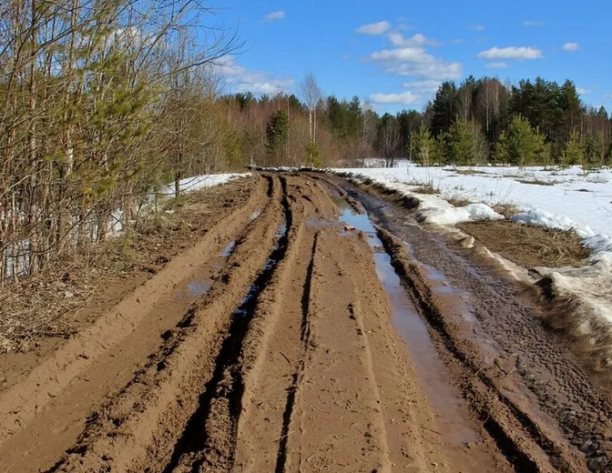

КОНСТРУИРОВАНИЕ МОБИЛЬНЫХ РОБОТОВ
- КОНСТРУИРОВАНИЕ МОБИЛЬНЫХ РОБОТОВ
- Классификация робототехнических комплексов
- Актуальность роботов военного назначения
- Основные задачи, возлагаемых на наземные мобильные РТК легкой категории в Сухопутных Войсках
- Задачи, решаемые РТК ВН в мирное время
- Задачи, решаемые РТК ВН во время проведения миротворческих операций
- Задачи, решаемые РТК ВН во время вооруженных конфликтов
- Задачи, решаемые РТК ВН во время крупномасштабных войн
- Ближайшие реализуемые типовые задачи обеспечения боевых действий, решаемые с применением РТК
- РТК это система
- Покрытия и грунт
- Взаимодействие движителя с грунтом
- Давления для реальных машин
- Тяговая сила
- Формулы, используемые в обиходе
- КПД гусеницы
- Основные конструктивные параметры движителей
- Прямолинейное движение
- Двигатели
- Криволинейное движение
- Решение задач на прямолинейное движение
- Центробежная сила при повороте и критическая скорость
- Мощность внешних сопротивлений при повороте
- Удельная сила тяги
- Введение
- Двигатели
- Системы обеспечения работы силовой установки
- Шасси, трансмиссия и ходовая часть
- Электросистемы
ЛЕКЦИЯ №0
Классификация робототехнических комплексов
Классификация роботов отличается большим многообразием. Они различаются по весовым категориям от нанороботов до машин весом в десятки тонн.
По структуре это:
- мобильные РТК, состоящие из передвижных роботов и обеспечивающие автоматические перемещения (полезной нагрузки) рабочих объектов в пространстве,
- манипуляционные РТК, предназначенные для имитации двигательных функций руки человека,
- информационные РТК – комплексы измерительно-информационных систем и управляющих средств, автоматически производящих сбор, передачу и обработку информации.
По области применения роботы делятся на:
- промышленный робот – это универсальное, автономное и автоматическое устройство с памятью и программным управлением, предназначенное для воспроизведения двигательных и некоторых умственных функций человека при выполнении основных и вспомогательных производственных операциях,
- роботы военного назначения служат как для применения непосредственно в военных операциях, так и для ведения разведки, участия в обеспечивающих операциях, выполняют задачи разминирования, слежения за границей, и т.д,
- роботы специального назначения функционируют в условиях опасных для жизнедеятельности человека, например, планетоходы - роботы для исследования других планет, роботы для пожаротушения, роботы функционирующие на атомных электростанциях, роботы для борьбы с террористами, и т.д.
По средам функционирования роботы делятся на:
- наземные,
- подземные,
- подводные,
- надводные,
- воздушные,
- космические.
Актуальность роботов военного назначения
Основное внимание будем уделять наземным роботам военного назначения, как наиболее сложным. Для этого необходимо обозначить термины и определения понятий в области робототехнических средств, комплексов и систем военного назначения.
Робототехническое средство военного назначения (РТС ВН) - конструктивно обособленное безэкипажное техническое средство, не являющееся боеприпасом, предназначенное для выполнения боевых и обеспечивающих задач под управлением оператора, автономно или сочетанием указанных способов.
Робототехнический комплекс военного назначения (РТК ВН) - совокупность функционально связанных робототехнических средств военного назначения и специальных технических средств, обеспечивающих их техническую эксплуатацию и применение по назначению.
Автономность робототехнического средства военного назначения - свойство, характеризующее способность робототехнического средства военного назначения выполнять задачи по назначению в течение заданного времени без использования внешних информационно-управляющих воздействий и дополнительных ресурсов.
Отметим, что в последнее время резко вырос интерес к роботам военного назначения. Это обуславливается рядом факторов, к основным из которых следует отнести:
- достижения научно-технического прогресса,
- изменения, происходящие в характере современного общевойскового боя,
- физиологические возможности человека, не обеспечивающие эффективное применение вооружения и военной техники на поле боя,
- снижение потерь личного состава в бою,
- достижение боевых потенциальных возможностей как образцов вооружения и военной техники, так и подразделений и частей при решении боевых задач,
- увеличение потерь психоневрологического профиля.
Современный общевойсковой бой повлечет за собой колоссальные потери не только в технике, но и в личном составе. Восполнить потери, особенно людские, в ходе войны будет практически невозможно. Проблема снижения потерь на поле боя людских потерь частично может быть решена за счет внедрения в войска роботизированных средств вооруженной борьбы.
Следующий фактор обусловлен ограниченными физиологическими возможностями человека, не обеспечивающий эффективное применение вооружения и военной техники на поле боя. Из общего количества факторов, определяющих боевую эффективность военной техники, свыше 70% обусловлено деятельностью человека. Так, на испытаниях и учениях за счет человеческого звена в работе системы "человек-машина" происходит до 40% общего количества отказов.
Условия обитаемости образцов вооружения и военной техники крайне неблагоприятно воздействует на личный состав при его длительном пребывании в герметизированных объектах, способствует ускоренному утомлению, снижению объема воспринимаемой информации, значительно снижает устойчивость к воздействию ряда поражающих факторов современного оружия. Все это препятствует полному использованию личным составом возможностей вооружения и военной техники.
Следует отметить, что практическое использование в военном деле роботизированных средств перспективно не только для снижения потерь личного состава в боевой обстановке, но и для выполнения операций, которые человек выполняет либо неэффективно, либо не может выполнить вообще. Примером может служить ситуация, когда смена боевой обстановки происходит либо слишком быстро для адекватной человеческой реакции, либо слишком медленно и поэтому не может восприниматься человеком.
Кроме того, современная военная техника уже сейчас является настолько сложной, что ею становится все труднее управлять, особенно в бою. Проблема значительно возрастает при ведении боевых действий в критических для человека ситуациях, когда вероятность ошибок и даже срывов резко увеличивается.
Другой фактор обусловлен увеличением потерь психоневрологического характера. Так, в американской армии в период второй мировой войны санитарные потери психоневрологического профиля составили в среднем 5-7 % всех боевых санитарных потерь, достигая в отдельные периоды боевых действий 17%. В 1973 г. в израильских войсках соответствующий средний показатель был уже значительно выше - до 25%.
Вышеизложенное обуславливает необходимость замены некоторых функций человека, выполняемых им в общевойсковом бою, роботами военного назначения.
Так широкое применение робототехнических комплексов в боевых и обеспечивающих операциях проводимых армиями стран НАТО и США в Афганистане, стало одним из факторов значительно уменьшивших боевые потери. За десять лет ведения боевых действий в Афганистане, при сопоставимых людских ресурсах, в боях участвовало 546 255 военнослужащих Советской Армии (справка Министерства обороны СССР), а по данным американских СМИ, через Афганистан за десять лет прошли около полумиллиона солдат США, боевые потери несопоставимы, соответственно 15 051 и 1929 человек.
На современном этапе прослеживается тенденция увеличения доли бронированных машин в системе вооружения сухопутных войск (СВ). На бронированных шасси создаются не только боевые, но и целый ряд вспомогательных машин обеспечения и на ближайшую перспективу тенденция насыщения СВ бронированными вспомогательными машинами сохранится.
Анализ тенденций развития ВВТ показал, что в ближайшие несколько десятилетий ожидается постепенный прогресс машинного интеллекта боевой техники от программного к интеллектуальному. Причем путем традиционной автоматизации будут развиваться, в основном, боевые средства, вплоть до создания сложных комплексов-роботов, а создание специальных робототехнических систем следует ожидать, видимо, в областях боевого, специально-технического и тылового обеспечения и для решения специальных задач.
Обе тенденции будут развиваться, оказывая влияние друг на друга, вплоть до возможного слияния.
Основные задачи, возлагаемых на наземные мобильные РТК легкой категории в Сухопутных Войсках
РТК ВН являются многофункциональным видом вооружения сухопутной техники (ВВСТ), обеспечивающим повышение эффективности применения системы вооружения Вооруженных Сил Российской Федерации.
Роль и место РТК ВН в системе вооружения Вооруженных Сил Российской Федерации определяются тем, что они в перспективе:
- являются самостоятельным средством ведения боевых действий и (или) дополняют традиционные виды оружия во всех формах и способах боевых и специальных действий при решении различных задач, обеспечивая достижение поставленных целей при сокращении потерь личного состава и снижении влияния человеческого фактора на их выполнение,
- могут находиться на вооружении (снабжении) различных видов и родов войск Вооруженных Сил Российской Федерации,
- могут использоваться для решения широкого круга задач (разведывательных, ударных, специальных) в различных условиях обстановки,
- могут применяться как средство ведения миротворческих операций, войн и военных конфликтов.
Основными принципами создания РТК ВН:
- учет существующих и прогнозируемых задач, стоящих перед видами и родами войск Вооруженных Сил Российской Федерации,
- повышение эффективности традиционного ВВСТ и группировок войск (сил), оснащенных РТК ВН,
- обеспечение возможности применения во всех видах военных и специальных действий,
- системный подход к разработке минимально необходимой номенклатуры РТК ВН, систем и их составных частей,
- опережающая подготовка научно-технического задела для обеспечения соответствия отечественной робототехники мировому уровню,
- использование современных технологий,
- модульно-блочное построение и миниатюризация подсистем,
- унификация РТК ВН и их составных частей,
- оперативно-экономическая целесообразность и соответствие прироста эффективности выполнения задач РТК ВН затраченным на их создание ресурсам.
Задачи, решаемые РТК ВН в мирное время
- Боевые:
- охрана и оборона объектов;
- охрана важных государственных объектов;
- охрана государственной границы Российской Федерации;
- Обеспечивающие:
- ведение инженерной разведки;
- дегазация, дезактивация и дезинфекция;
- доставка ГСМ;
- использование в складских работах на военных складах и в арсеналах;
- картографирование;
- конвоирование транспортных грузов;
- контроль газового состава при контроле трубопроводов;
- ликвидация нештатных ситуаций с опасными в обращении боеприпасами;
- обезвреживание взрывоопасных предметов;
- обеспечение связи и управления войсками;
- освещение обстановки;
- охрана особо важных объектов и лиц;
- погрузочно-разгрузочные работы;
- поиск, распознавание, нейтрализация или транспортировка взрывоопасных предметов;
- преодоление участков радиационно, химически и бактериологически зараженной местности и выполнение операций, соприкасаясь с агрессивными средами;
- проведение всех видов разведки;
- проведение маскировочных мероприятий;
- радиационная, химическая и бактериологическая разведка;
- разминирование;
- скрытие объектов ВВТ индивидуальными средствами защиты;
- скрытная и своевременная (быстрая) доставка в заданный район личного состава, оружия и обеспечивающих средств;
- слежение за вскрытыми объектами;
- создание самодвижущихся макетов;
- тушение пожаров;
- участие в поисково-спасательных операциях.
Задачи, решаемые РТК ВН во время проведения миротворческих операций
- Боевые:
- нейтрализация военной техники конфликтующих сторон;
- охрана и оборона объектов;
- участие в отражении атак;
- Обеспечивающие:
- блокирование района конфликта с целью обеспечения выполнения санкций, принятых международным сообществом;
- ведение инженерной разведки;
- дегазация, дезактивация и дезинфекция;
- доставка боеприпасов;
- доставка ГСМ;
- изменение фоноцелевой обстановки, в том числе среды распространения электромагнитных волн;
- использование в складских работах на военных складах и в арсеналах;
- картографирование;
- конвоирование транспортных грузов;
- ликвидация нештатных ситуаций с опасными в обращении боеприпасами
- материально-техническое снабжение;
- обезвреживание взрывоопасных предметов;
- обеспечение доставки гуманитарной помощи гражданскому населению;
- обеспечение связи и управления войсками;
- освещение обстановки;
- охрана объектов миротворческого контингента;
- охрана особо важных объектов и лиц;
- перезаряжание оружия;
- погрузочно-разгрузочные работы;
- поиск и вскрытие объектов конфликтующих сторон;
- поиск и уничтожение мин;
- поиск, распознавание, нейтрализация или транспортировка взрывоопасных предметов;
- поиска раненых в любых климатических условиях, днем и ночью;
- постановка демаскирующих и сигнализационных средств;
- проведение аварийно-восстановительных работ в особых условиях;
- проведение всех видов разведки;
- проведение маскировочных мероприятий;
- радиационная, химическая и бактериологическая разведка;
- скрытие объектов ВВТ индивидуальными средствами защиты;
- скрытная и своевременная (быстрая) доставка в заданный район личного состава, оружия и обеспечивающих средств;
- слежение за вскрытыми объектами;
- тушение пожаров;
- эвакуация с поля боя или места аварии пострадавшего личного со-става, поврежденной техники под огнем.
Задачи, решаемые РТК ВН во время вооруженных конфликтов
- Боевые:
- охрана и оборона объектов;
- проведение диверсионных мероприятий;
- прорыв подготовленной обороны;
- уничтожение военной техники противника;
- уничтожение живой силы;
- участие в отражении контратак;
- штурмовые и прорывные действия с использованием огневых средств поражения;
- Обеспечивающие:
- ведение инженерной разведки;
- дегазация, дезактивация и дезинфекция;
- доразведка положения, состава, характера действий объектов противника перед нанесением по ним ударов средствами поражения и установление результата их нанесения;
- доставка боеприпасов;
- доставка ГСМ;
- изменение фоноцелевой обстановки, в том числе среды распространения электромагнитных волн;
- использование в складских работах на военных складах и в арсеналах;
- конвоирование транспортных грузов;
- корректировка огня различных средств поражения;
- ликвидация нештатных ситуаций с опасными в обращении боеприпасами;
- материально-техническое снабжение под огнем противника;
- минирование;
- обезвреживание взрывоопасных предметов;
- обеспечение продвижения войск на маршрутах;
- обеспечение связи и управления войсками;
- обслуживание стрельбы артиллерии;
- освещение обстановки;
- охрана особо важных объектов и лиц;
- перезаряжание оружия;
- погрузочно-разгрузочные работы;
- поиск и вскрытие объектов противника;
- поиск, распознавание, нейтрализация или транспортировка взрывоопасных предметов;
- поиска раненых на поле боя в любых климатических условиях, днем и ночью;
- постановка демаскирующих и сигнализационных средств;
- постановка дымовых завес;
- преодоление участков радиационно, химически и бактериологически зараженной местности и выполнение операций, соприкасаясь с агрессивными средами;
- проведение аварийно-восстановительных работ в особых условиях;
- проведение всех видов разведки;
- проведение маскировочных мероприятий;
- проделывание проходов в минно-взрывных заграждениях;
- радиационная, химическая и бактериологическая разведка;
- РЭБ и РЭП;
- скрытие объектов ВВТ индивидуальными средствами защиты;
- скрытная и своевременная (быстрая) доставка в заданный район личного состава, оружия и обеспечивающих средств;
- слежение за вскрытыми объектами;
- создание самодвижущихся макетов;
- тушение пожаров;
- эвакуация с поля боя или места аварии пострадавшего личного состава, поврежденной техники в условиях заражения местности;
- эвакуация с поля боя или места аварии пострадавшего личного состава, поврежденной техники под огнем противника.
Задачи, решаемые РТК ВН во время крупномасштабных войн
- Боевые:
- охрана и оборона объектов;
- проведение диверсионных мероприятий;
- прорыв подготовленной обороны;
- уничтожение военной техники противника;
- уничтожение живой силы;
- участие в отражении контратак;
- штурмовые и прорывные действия с использованием огневых средств поражения;
- Обеспечивающие:
- ведение инженерной разведки;
- дегазация, дезактивация и дезинфекция;
- доразведка положения, состава, характера действий объектов противника перед нанесением по ним ударов средствами поражения и установление результата их нанесения;
- доставка боеприпасов;
- доставка ГСМ;
- изменение фоноцелевой обстановки, в том числе среды распространения электромагнитных волн;
- использование РТС в складских работах на военных складах и в арсеналах;
- конвоирование транспортных грузов;
- корректировка огня различных средств поражения;
- ликвидация нештатных ситуаций с опасными в обращении боеприпасами;
- материально-техническое снабжение под огнем противника;
- минирование;
- обезвреживание взрывоопасных предметов;
- обеспечение продвижения войск на маршрутах;
- обеспечение связи и управления войсками;
- обслуживание стрельбы артиллерии;
- определение зон и уровня заражения ОМП;
- освещение обстановки;
- охрана особо важных объектов и лиц;
- перезаряжание оружия;
- погрузочно-разгрузочные работы;
- поиск и вскрытие объектов противника;
- поиск, распознавание, нейтрализация или транспортировка взрывоопасных предметов;
- поиска раненых на поле боя в любых климатических условиях, днем и ночью;
- постановка демаскирующих и сигнализационных средств;
- постановка дымовых завес;
- преодоление участков радиационно, химически и бактериологически зараженной местности и выполнение операций, соприкасаясь с агрессивными средами;
- проведение аварийно-восстановительных работ в особых условиях;
- проведение всех видов разведки;
- проделывание проходов в минно-взрывных заграждениях;
- радиационная, химическая и бактериологическая разведка;
- РЭБ и РЭП;
- скрытие объектов ВВТ индивидуальными средствами защиты;
- скрытная и своевременная (быстрая) доставка в заданный район личного состава, оружия и обеспечивающих средств;
- слежение за вскрытыми объектами;
- создание самодвижущихся макетов;
- тушение пожаров;
- эвакуация с поля боя или места аварии пострадавшего личного состава, поврежденной техники в условиях заражения местности;
- эвакуация с поля боя или места аварии пострадавшего личного состава, поврежденной техники под огнем противника.
Ближайшие реализуемые типовые задачи обеспечения боевых действий, решаемые с применением РТК
ЛЕКЦИЯ №1
РТК это система
Робот это сложная система (РТК-среда-оператор), в нем нет главного, все части играют важную роль (ходовая часть, трансмиссия, система управления и т.д.).
-
Оператор
-
Визуальные и другие сигналы, поступающие к оператору
Это может быть как камера, так и прямой зрительный контакт. Если робот маленький, то с помощью камеры оператор ничего не увидит. Кроме того, есть связь между скоростью движения робота и видимостью с камеры (больше скорость - меньше видимость). Это так, потому что у робота пока что слабые "мозги".
-
Разгон и торможение
-
Управление (вправо, влево, вперед, назад)
-
Неровности поверхности
-
Дорожные условия
Связано с подвеской робота. Если подвеска плохая, то робот теряет управляемость, может нарушаться телевизионная картинка (хотя это решается, например, электронной стабилизацией). Сюда же относится наличие грязи, снега и т.д., необходимость в знании грунта, по которому движется робот.
-
Аэродинамика
Современные роботы пока достигают максимум 60-70 км/ч. И при скоростях больше 40 км/ч (а для маленьких роботов и при больше 20 км/ч) оказывает большое влияние сопротивление бокового и встречного ветров, появляются эффекты раскачивания и отрыва машины.
-
Видео информация
Как правило, это комлексированная система, т.е. это телевидение, тепловидение, лазерная система, ультрафиолетовые камеры и т.д.
-
Аудио информация
Слушая робота, можно также принимать какие-то решения о последующих действиях.
-
Техническая информация
Это может быть информация о каком-то предельном режиме (например, предельный крен), о температуре масла и т.д.
Хорошо бы еще было иметь в качестве обратной связи информация о вибрациях, поскольку большое количество поломок роботов происходит именно из-за того, что оператор не чувствует вибраций робота.
Характеристики робота:
а. Эксплуатационные характеристики (наличие горючего, освещенность и т.д.)
б. Управляемость
в. Плавность хода
Диагностика агрегатов машины
На роботах (особенно больших) ставится бортовая информационная система, которая опрашивает все агрегаты, чтобы определить оставшийся ресурс машины (аудиовибродиагностика). Каждый агрегат имеет какую-то амлитудно-частотную характеристику, которая изменяется со временем. Например, в трансмиссии у зубчатых колес со временем увеличиваются зазоры, соответственно увеличивается сила удара, звук, изменяется частота, появляются пики на фазово-частотной характеристике. При появлении трещин характеристики также меняются. Существуют полученные из опыта данные, по которым можно сказать, сколько еще отработает тот или иной агрегат. В больших машинах (например, танки, бмп) дошли уже до того, что снимают информацию с каждого зуба колеса (тензометрирование; это может быть сделано как с помощью тензодатчиков, так и с помощью лазера).
Покрытия и грунт
Покрытия бывают:
- твердые
- искусственные (асфальт, бетон)
- грунтовые (летом в отсутствие дождя)
- обледенелые
- деформируемые
-
большинство грунтов в естественном состоянии
-
грунтовые дороги в период межсезонья, распутицы
 -
снег
-
Грунты состоят из разных частичек. По размеру этих частичек происходит классификация грунтов. Частички бывают:
- глинистые (5мкм) (липкость, водонепроницаемость)
- пылевые (0,005 - 0,05мм)
- песчаные (0,05 - 2,5мм)
- гравий (2,5 - 40мм)
Классификация грунтов зависит от количества глинистых частиц:
- связные грунты
- глинистые грунты (глинистых частиц больше 25%) (глина бывает тяжелой, легкой, средней)
- суглинки (12 - 25%)
- супесчаные грунты (3 - 12%)
- песчаные грунты (меньше 3%)
Бывают и другие классификации грунтов, но по таким грунтам ездят только специальные машины.
На качество грунта очень влияет влажность (отношение массы грунта с влагой к массе без нее). Она может быть от 0 до 800% (например, если взять кусок торфа и поместить его в ведро с водой, то он впитает в себя всю воду и будет весить в несколько раз больше изначального веса).
В зависимости от влажности существуют грунты:
-
твердопластичные (влаги до 50%)
То есть это сухие грунты, по ним можно спокойно передвигаться. Но тут есть разделение, сколько проходов может сделать машина, то есть может пройти одна машина, колона машин или вообще ни одна машина. Это зависит от того, как быстро выбивается колея, что может привести к тому, что машина будет садиться на брюхо (по этой причине делают машины с переменным клиренсом).
-
пластичные (влаги от 50% до 100%)
Эти грунты оставляют колею.
-
текучие (влаги больше 100%)
Определение характеристик грунта
В случае с экипажными машинами грунт можно определить на взгляд, в конце концов водитель может выйти сам ногой попробовать, а вот с роботами все сложнее, и задача практического определения грунта роботом до сих пор до конца не решена.
Существуют целые службы в армии, задача которых определять, пройдет колона по грунту или нет. Есть прибор пенетрометр, который втыкают в грунт, чтобы определить характеристики грунта (например, с вертолета может сбрасываться копьевидный пенетрометр, у которого есть датчик ускорения, и в зависимости от скорости торможения прибора в грунте, т.е. насколько он глубоко заходит до полного торможения, определяется характер грунта).
Важнейшей механической характеристикой грунта является отношение силы деформирования к деформации грунта. Чем больше колесо/гусеница погружается, тем больше затраты мощности на передвижение. Определение механической характеристики грунта пришло из строительства. Для этого используется штамп известной площади, который вдавливают в грунт с известной силой (
Так получается зависимость между удельным давлением на грунт (
Формула Бернштейна-Летошнева-Горячкина для удельного давления на грунт
Таким штампом можно определить сопротивление движению, узнать какая нужна мощность. Но чтобы определить, хватит ли машине сцепления или нет, используют другой вид штампов:
или более простой и удобный:
[Для лунохода с сетчатым колесом] Кольцо с сеткой кладется на грунт, нагружается силой
Формула Яноши-Ханамото для касательного напряжения в грунте
Формул для
Коэффициенты
(постоянная сжатия грунта), (коэффициент грунта), (липкость грунта), (угол внутреннего трения грунта) и определяют данный конкретный грунт в данный конкретный момент.
Поверхность грунта
Поверхность грунтов не является идеально ровной. Бывают:
- плоские
- горизонтальные
- наклонные
- неровные
Если длина неровности больше 100м (больше нескольких баз машины, т.е. для маленького робота это уже будет не 100м, а, например, 5м), то это уже уклон. По уклонам различают следующие местности (по величине уклонов и числу уклонов):
-
слабохолмистая
-
холмистая
-
резко пересеченная
-
горная
Небольшой уклон называется косогором. На уклон надо ползти, а на косогор можно разогнаться и забраться за счет сил инерции.
Все дороги по уклонам деляться на классы (1% уклон это 1 метр подъема на 100 метров длины):
- 1-го класса дороги (уклон не больше 6%)
- 2-го класса дороги (уклон не больше 7%)
- 3-го класса дороги (уклон не больше 8%)
- 4-го класса дороги (уклон не больше 9%)
- 5-го класса дороги (уклон не больше 10%)
Если уклон больше, то ставится специальный знак.
Есть понятие макропрофиль и микропрофиль. Шероховатая поверхность это 2мм на 5м. Микропрофиль это 10см на 100м.
Есть на дорогах прямолинейные участки (радиус поворота больше 300-400м), горные участки (радиус поворота 30-40м), в некоторых перевалах радиус поворота может быть 10-12м.
ЛЕКЦИЯ №2
Взаимодействие движителя с грунтом
При взаимодействии движителя с грунтами есть два важным момента:
- распределение вертикальных реакций под движителем,
- возникновение горизонтальной реакции (силы тяги), которая позволяет передвигаться.
По статистике примерно 52% роботов имеют гусеничные движители, 45% - колесные, остальные - экзотика. Экзотика это ползующие, шагающие, прыгающие, плавающие и т.д. Они применяются, например, в разведывательных целях.
С точки зрения взаимодействия с грунтом физика процесса примерно одинакова, независимо от того, какой движитель. Хотя есть нюансы.
Взаимодействие колесного движителя с поверхностью
В зависимости от соотношения жесткости колеса в нормальном направлении к опорной поверхности могут быть разные случаи картинки. Все зависит от соотношения деформаций:
- мягкое колесо на жестком основании (асфальт, лед, укатанный снег)
- жесткое колесо на мягком основании (например, это хорошо накачанная шина на снегу или песке)
В большинстве же случаев имеем что-то среднее (мягкое колесо на снегу, песке, болоте, пашне):
Эпюра давления под движителем получается разная:
- колесо на жестком основании
Пятно контакта колеса и продольные и поперечные эпюры давления в статике:
Эпюра давления зависит от конструкции колеса, от того, как оно накачано и т.д.
В динамике:
Давление под колесом на самом деле распространяется в стороны (иногда на две ширины колеса):
- колесо на мягком основании
В зависимости от соотношения жесткости грунта и жесткости колеса (насколько оно накачано) получаются разные эпюры давления:
Давление меньше
Взаимодействие гусеничного движителя с поверхностью
Гусеница на мягком основании
Среднее удельное давление:
Также есть другие формулы:
Чтобы снизить пиковые нагрузки, бывают разные конструкции. Например, можно делать много маленьких катков. Или можно использовать резиновую пневмогусеницу (она накачана и старается распрямится, что приводит к гладкой эпюре давления):

Однако такую гусеницу мало применяют, поскольку ее сложно натягивать, а когда набивается снег и замерзает (при движении машины снег греется, а при остановке замерзает), она сваливается. Можно применять на маленьких роботах. У такой гусеница идеальная проходимость по снегам и болотам (пиковая нагрузка меньше в 3-3,5 раза
Гусеница на жестком основании
В теории такой случай рассматривают как будто машина колесная, то есть убирают гусеницу. Но при этом ее, конечно, учитывают для других расчетов (в кпд, в моментах инерции и т.д.).
Давления для реальных машин
Для снегоходов и болотоходов от
Для тракторов сельхозназначения, а также примерно 20 тонных машин от
Для среднего танка от
Для тяжелого танка от
Для автомобилей примерно
Для авиационных шин давление может быть
Из-за водяного клина машина всплывает и становится не управляемой. С этим связано то, что нельзя ездить на "лысых" шинах (поэтому делают протектор и т.д.). Если шина все же "лысая", то ее надо сильнее накачивать, чтобы она лучше выжимала из под своего пятна контакта воду.
Тяговая сила
Максимальное касательное напряжение в грунте:
Тогда максимальная сила тяги:
Если едем по песку (
Таким образом на песке не важно, колесный или гусеничный движитель.
Если едем по весенней распутице (
Таким образом тяга зависит от пятна контакта. В этом случае гусеница будет намного лучше.
Тяга у гусеничного движителя
Буксование гусеницы:
Буксование может быть от 0 до 1. А юз от 0 до
Теоретическая скорость:
В зависимости от процента буксования график
Сила тяги:
Зависимость силы тяги от буксования:
Тяга у колесного движителя
Зависимость силы тяги от динамического радиуса:

Если нет буксования, то нет и силы тяги. Если нужно получить максимальную силу тягу, то буксование должно быть 100%.
С точки зрения управления важным параметром является периметр колеса, поскольку радиус колеса может менять при деформациях, а периметр будет константой. Именно периметр используется для расчета скорости спидометром.
Сопротивление движению
В колесных движителях
У колесных движителей сопротивление движению больше всего зависит от давления в шинах, конструкции шин и характеристик грунта.
Сопротивление движению складывается из сопротивления намятию шин и сопротивления от грунта.
Если колесо сильно накачено, то оно станет жесткое, сильнее станет врезаться в грунт, т.е. погружаться в него, следовательно будет больше сопротивление. А если меньше накачано, то колесо становится плоским, т.е. в грунт не входит, но при этом начинает мяться шина, т.е. имеем сопротивление самого колеса и тепловые потери в шине. Обычно ездят на 0,5 атм.
Обычно вместо
Зависимость коэффициента сопротивления движению от скорости
Также коэффициент сопротивления движению зависит от нагрузки на колесо, от геометрических параметров колеса (например, на мягкой поверхности диаметр увеличили
К вопросу об аквапланировании (упоминалось выше):
Поэтому у всех самолетов шины накачаны сильно.
ВЫВОД: в колесе самое главное соблюдать давление, указанное производителем.
Шины бывают радиальные и диагональные.
В диагональных шинах корд находится по диагонали, получается ромб, подвижная фигура, она мнется
В гусеничных движителях
Природа сопротивления в гусеничных движителях намного сложнее, чем в колесных, поскольку очень сложно разделить, какие потери происходят в грунте, а какие в самой гусенице.
Сопротивление прямолинейному движению гусениц
-
Потери на прессование грунта
Они зависят от:
- удельного давления под гусеницами (величины и формы эпюры),
- характера грунта,
- конструкции движителя (большие/маленькие колесики),
- высоты грунтозацепов (грунтозацепы больше
тяга И сопротивление больше), - величины трака,
- конструкции сочленения (используются резино-металлические (РМШ) или открыто-металлические (ОМШ) шарниры (т.е. сталь по стали)).
-
Потери на перекатывание опорных катков
-
Потери в шарнирах
Они зависят от:
- угла закручивания шарнира
(насколько между собой закручиваются траки), - силы натяжения гусеницы
, - радиуса шарнира
, - коэффициента трения в шарнире
(если это сталь по стали, то может быть до 0,6; если это специальная сталь, то 0,1-0,2; если используются игольчатые подшипники, то 0,022).
- угла закручивания шарнира
-
Потери на удар (накатывание звеньев гусеницы на колеса и катки)
-
Потери на неровности грунта
-
Проскальзывание траков на ведущих колесах (т.е. износ)
-
Потери от натяжения (больше натяжение
больше потери; если в ОМШ натяжение 1 тонна, то в РМШ будет 3 тонны) -
Потери от скорости движения
Поэтому танки преимущественно больше 70-80 км/ч не ездят.
Формулы, используемые в обиходе
Этих формул обычно достаточно, если не нужно действительно во что-то углубиться.
Коэффициент сцепления:
Коэффициент сцепления показывает максимальные возможности грунта.
Коэффициент сопротивления движению:
Коэффициент сопротивления движению показывает сопротивление грунта движению.
ЛЕКЦИЯ №3
КПД гусеницы
Для открыто-металлического шарнира ОМШ:
Для резино-металлического шарнира (РМШ):
Существуют и другие формулы.
У гусениц существует неравномерность перематывания. Если гусеница в виде ленты, то она перематывается равномерно, а если же гусеница состоит из звеньев, то она все время дергается.
Если звено маленькое (
Основные конструктивные параметры движителей
Определяют опорно-тяговые качества РТС.
- Для колесных движителей
- свободный радиус колеса, [м], - динамический радиус, [м], - ширина профиля шины в свободном состоянии, [м], - ширина протектора, [м], - высота грунтозацепов, [м], - шаг грунтозацепов (осевой), [м], - угол наклона грунтозацепов, [град].
- Для гусеничных движителей
- длина опорной части гусеницы, [м], - ширина гусеницы, [м], - шаг трака, - ажурность трака равная ( - суммарная площадь всех отверстий, - площадь опорной поверхности трака) (чем больше ажурность, тем менее прочный и более легкий трак), - диаметр ведущего колеса, [м], - число зубьев ведущего колеса, - диаметр опорного катка, [м], - ширина опорного катка, [м], - число опорных катков одного борта, - высота расположения ленивца (ленивец - колесо, которое натягивает гусеницу), [м], - передний и задний угол свеса наклонной ветви гусеницы, [град].
От выбора движителя сильно зависит проходимость. Проходимость бывает полной и частичной (когда увеличивают обороты, снижается скорость и т.д.). Конструктивные параметры сильно влияют на проходимость. Например, для колесных шасси на проходимость влияют:
- геометрический размер колеса,
- конструкция протектора,
- давление в шинах,
- распределение массы по осям,
- число и схема расмещения колес,
- параметры подвески,
- двигатель,
- удельная мощность,
- колесная форма (4x4, 6x6, 4x2 и т.д.),
- тип привода (механический, электрический, гидравлический, пневматический).
Прямолинейное движение
Для гусеничных и колесных полноприводных роботов схема расчета одинаковая. Если же колесный не полноприводный, то схема расчета будет немного отличаться (сопротивление оказывается на всех колеса, а тяга есть только на какой-то одной паре).
Равномерное движение
Может еще быть крюковая нагрузка.
Потребная сила тяги
Коэффициент сопротивления движению с учетом уклона местности:
или
Первой формулой, как правило, пользуются танкисты-гусеничники, а второй - автомобилисты, поскольку они ездят по детерминированной среде, а
Значения коэффициента сопротивления движению
| Асфальт | Сухая грунтовка | Луг | Снег | |
|---|---|---|---|---|
| 0,02 (колесо) - 0,025 (гусеница); выше темп. |
0,03 - 0,04 | 0,12 - 0,17 | 0,07 (плотный) - 0,21 (мокрый) |
Сила сопротивления среды
Сопротивление среды зависит от среды. На воздухе сопротивление учитывают, когда скорость машины больше 50 км/ч. Сопротивление воды учитывают всегда, поскольку плотность воды в 800 раз больше плотности воздуха.
Предельная сила тяги
Значения коэффициента сцепления
| Асфальт/бетон | Сухая луговина | Сухая грунтовка | Мокрая грунтовка | Песок | Снег | |
|---|---|---|---|---|---|---|
| 0,8 (резиновые колеса/гусеницы), 0,35 (стальные гусеницы) | 0,7 - 1 | 0,8 - 0,9 | 0,5 - 0,6 | 0,5 (сухой), 0,8 (мокрый) | 0,2 (мокрый) - 0,8 (плотный) |
Если приравнять потребную (без учета силы сопротивления среды) и предельную силы тяги, то получим тангенс предельного угла подъема:
Например, если грунт - дернина, т.е.
Неравномерное движение
С точки зрения грунта потребная сила тяги:
А с точки зрения двигателя надо раскрутить гусеницы/колеса, всю трансмиссию, т.е. надо затратить дополнительную энергию:
Поскольку считать
Коэффициент приращения массы для вальной коробки (эмпирическая зависимость):
В итоге, можно посчитать предельное ускорение машины, приравняв потребную и предельную силы тяги. Например, для прямого участка:
Например, если
Динамический фактор:
Динамический фактор является безразмерной величиной, и он позволяет сравнивать между собой разных роботов.
Обычно
Свободная мощность двигателя (мощность на кончике коленчатого вала, т.е. уже вычли мощность, затрачиваемую на вентилятор, калорифер, климат-контроль, генератор и т.д.):
Характерными точками двигателей являются обороты при номинальной мощности (
Скорость в км/ч:
Тяговый расчет прямолинейного движения
Задача тягового расчета
- Определить максимальную мощность двигателя
. - Определить диапазон изменения скоростей
и число передач.
Например, надо
- Построить тяговую характеристику (зависимость динамического фактора от скорости машины).
Параметры, необходимые для того, что осуществить тяговый расчет
- Масса машины,
- Максимальная скорось,
- Среда, в которой работает машина (
), - Тип трансмиссии,
- Тип ходовой части,
- Максимальный угол подъема, на который машина может подниматься.
Расчет
Скорость в км/ч:
Максимальная скорость развивается тогда, когда уклон минимальный (
КПД трансмиссии:
Для вальных коробок КПД одного зацепления прямозубой передачи
Для планетарной передачи КПД не зависит от передачного отношения:
Свободная мощность [Вт]:
Свободная мощность [л.с.]:
Свободная мощность [кВт]:
Эффективная мощность:
Затем определяем минимальную скорость движения. Для этого находим максимальную силу тяги. Максимальная сила тяги будет на подъеме:
Тогда,
Для колесных машин КПД примерно одинакого остается (примерно
Как только посчитали минимальную скорость можем найти диапазон скоростей:
Для легковых машин это
Далее нужно сделать коробку передач, поскольку у ДВС диапазон
Коробка с минимальным количеством передач (по геометрической прогрессии)
Скорость представляет собой прямолинейную зависимость:
Работать надо в диапазоне оборотов от
1-я передача позволяет максимум увиличить скорость до
Отсюда имеем, что
Если взять логарифм от обеих частей, то получим:
Плюс такой коробки передач: машина очень быстро набирает скорость.
Минус передачи: на больших передачах очень большой разрыв между скоростями. Из-за этого в грязи может быть невозможно переключиться вообще.
Толчки при переключении передач происходят из-за несовпадения скоростей колес и двигателя, т.е. колеса двигаются с той скоростью, что и двигались до переключения, а двигатель сбавил обороты.
Коробка передач с равными интервала разбиения (по арифметической прогрессии)
Максимальная скорость на каждой передаче отличается от максимальной скорости на предыдущей передачи на постоянную величину, т.е. имеем арифметическую прогрессию.
Тогда число передач:
Плюсы такой коробки передач: переключение на каждую следующую передачу происходит при большей мощности.
Минусы коробки: очень много передач
В реальности используют симбиоз двух коробок передач - сначала передачи идут по геометрической прогрессии (чтобы быстрее разогнаться), а последующие передачи - по примерно арифметической.
Оторванная передача
Допустим машина должна хорошо ездить и по грязи, и по асфальту. Тогда надо сделать много передач. Или же вместо большого количества передач (т.е. большой коробки передач) можно сделать коробку передач с оторванной передачей.
Таким образом получается коробка передач меньше по размерам, дешевле, и ее удобнее переключать.
ЛЕКЦИЯ №4
Двигатели
Момент берется с двигателя. Как правило, используются двигатели внутреннего сгорания (карбюраторные и, так называемые, дизельные). Очень редко используют газотурбинные (танки Т80, Абрамс). Такие двигатели не глохнут.
Двигатели внутреннего сгорания (ДВС)
Циклы работы
Цикл Отто
Это бензиновый двигатель. Поступление энергии идет при постоянном объеме.
Цикл Дизеля
Поступление энергии идет при постоянном давлении.
Обычно это очень крупные двигатели, которые работают с маленькими оборотами (80 - 100 об/мин), поршни 1 - 1,5 м диаметром. Обычно это либо судовые двигатели, либо электростанции. Подают в двигатель размолотый уголь, мазут, можно хоть муку вдувать, двигателю все равно на чем работать, лишь бы горело.
Цикл Сабатэ
Поступление энергии идет смешанным образом. Такой двигатель называют в обиходе дизельным.
Характеристика
Для движения нужно, чтобы при маленьких скоростях был большой момент, а при больших скоростях - маленький (необходимая характеристика).
Внешняя характеристики ДВС это характеристика
Коэффициент приспосабливаемости:
Для карбюраторных двигателей коэффициент приспосабливаемости
У бензинового и дизельного двигателей отличаются характеристики:
На бензиновом двигателе в пробках в городе горючего тратится намного больше, чем на трассе. Дизельный двигатель в городе выгоднее.
Дизельный двигатель будет раскручиваться пока не развалится, если в него подавать топливо. Поэтому дизельные двигатели ограничивают какими-то предельными оборотами.
На бензиновом двигателе нельзя работать при оборотом меньше
Улучшение характеристики двигателя
Для улучшения характеристик применяют различные ухищрения. Одно из них это использование промежуточного трансформатора, чтобы растянуть момент двигателя. Трансмиссия может быть электрической или гидравлической. Гидравлическая трансмиссия бывает двух видов. Если преобразование происходит за счет скоростного напора, то трансмиссия называется гидродинамической. Если же за счет давления, то трансмиссия называется гидрообъемной (или гидростатической).
Гидродинамическая трансмиссия
Основа - некий агрегат, где подводится/отводится момент. Есть несколько видов таких агрегатов. Одним из них является гидромуфта.
В замкнутой полости есть крылышки, которые вращаются. Работает по принципу "с чем пришли с тем и ушли":
Никакого выигрыша в моменте в гидромуфте нет (поэтому так и называется), т.е.
Гидромуфта может иметь модификации, благодаря которым можно будет менять момент турбины
Если у ДВС коэффициент приспосабливаемости
Иногда может использоваться несколько гидротрансформаторов, чтобы система, включая один за другим гидротрансформаторы, работала с хорошим КПД на большем диапазоне:
Когда используется гидротрансформатор, понижается количество необходимых передач.
ЛЕКЦИЯ №5
Гидростатическая трансмиссия
Простейшая гидростатическая передача:
Если
Если такую передачу замкнуть по кругу, поставить поршни, то можно будет насосом качать жидкость под любым давлением. Если изменять наклон шайбы насоса, то будет меняться ход поршней, и соответственно будет меняться расход жидкости.
Мощность:
Такие передачи обычно делают в двух режимах: режим технологический (маленькие скорость, 5-10 км/ч), режим транспортный (25-40 км/ч). И они очень дорогие. Могут использовать, например, в минных тральщиках, лесозаготовительных комбайнах, в машинах, укладывающих асфальт.
Тягово-динамическая характеристика имеет следующий вид:
Криволинейное движение
Все колесные и гусеничные роботы поворачивают также, как колесная и гусеничная транспортная техника.
Варианты поворота колесных машин:
На больших скоростях стараются поворачивать только передние колеса, поскольку поворот задних может привести к заносу, перевороту машины. Но на малых скоростях можно поворачивать и задние колеса.
Варианты поворота гусеничных машин:
Также могут быть колесно-гусеничные машины и другие виды экзотики.
Большинство роботов поворачиваются танковым поворотом, что гусеничные, что колесные, поскольку иначе управление значительно усложняется. Исключением являются роботы, для которых берутся шасси уже существующей экипажной машины.
Решение задач на прямолинейное движение
-
Робот весом
движется по наклонной плоскости с выключенным фрикционом и развивает ускорение Определить ( , ). Решение:
С точки зрения двигателя потребная сила тяги:
Поскольку движение происходит с выключенным фрикционном, то
. Тогда: Ответ:
-
Параметры машины
, , , . Параметры двигателя , , . Параметры грунта , . Определить максимальную тягу на крюке при скорости . Недостающие параметры задать самому. Решение:
Максимальная скорость машины
. Максимальная сила тяги
Н. Следовательно, максимальная тяга на крюке:
Ответ:
-
Параметры гусеничного робота:
, , , , , . Параметры грунта: , , . Определить максимальное ускорение. Решение:
Потребная сила тяги:
Максимальная скорость машины
Предельная сила тяги:
Тогда:
Отсюда:
Ответ:
-
Какова должна быть свободная мощность двигателя робота весом в
, чтобы преодолеть местный уклон и , на грунте , . если скорость: , . Решение:
Вес робота
. Максимальная скорость машины
. Потребная сила тяги при максимальной скорости
(движение по прямой): Потребная сила тяги при минимальной скорости
(движение в горку): Общее КПД
Из рисунка задачи видно, что робот колесный. Примем, что
, . Тогда . Необходимая свободная мощность при движении по прямой:
Необходимая свободная мощность при движении в горку:
При этом предельная сила тяги:
Получается, что на данном грунте (
сухой песок) робот не сможет заехать на заданный уклон. Ответ:
, но на данном грунте робот не заедет в горку с заданным углом. -
Определить максимальный угол подъема для РТС 4x4. А) Параметры автомобиля. Б) Параметры двигателя. В) Параметры грунта. Недостающие параметры задать самому.
Решение:
Предельный преодолеваемый автомобилем подъём (т.е. максимальный угол) зависит как от характеристик покрытия дороги, по которой осуществляется движение автомобиля, так и от характеристик самого автомобиля. Максимальный угол подъема определяется наименьшим из предельных углов по опрокидыванию и по сцеплению всех ведущих колёс с опорной поверхностью (буксованию ведущих колёс).
Наибольшие (предельные) углы преодолеваемого подъёма по опрокидыванию (отрыву передних колёс):
Трансмиссии полноприводных автомобилей могут быть дифференциальными и блокированными. Преимущества блокированной трансмиссии - простота конструкции и высокая проходимость автомобилей в тяжелых дорожных условиях. Недостаток - наличие циркуляции мощности при кинематическом рассогласовании ведущих колес. При использовании дифференциальной трансмиссии меньше затраты мощности при движении автомобиля (выравниваются моменты на ведущих колесах) и исключается дополнительное нагружение деталей. Основной ее недостаток - конструктивная сложность и более высокая стоимость.
Наибольшие углы преодолеваемого подъёма по сцеплению всех ведущих колёс с опорной поверхностью (буксованию ведущих колёс) при блокированном приводе ведущих осей для одиночного автомобиля (рад):
Наибольшие углы преодолеваемого подъёма по сцеплению всех ведущих колёс с опорной поверхностью (буксованию ведущих колёс) при дифференциальном приводе ведущих осей для одиночного автомобиля (рад):
где:
- расстояние от центра масс РТС до задней оси, м, - расстояние от центра масс РТС до опорной повехности дороги, м, - коэффициент сопротивления качению колёс, - динамический радиус колёс РТС, м, - коэффициент продольного сцепления ведущих колёс РТС, - база РТС, м, - коэффициент несимметричности межосевого дифференциала РТС.
Рассмотрим РТС на базе автомобиля Volkswagen Transporter T4:
Его параметры:
Мощность двигателя
, Полная масса:
кг, Масса, приходящаяся на заднюю ось:
кг, База:
, Габаритная высота:
мм. Тогда , Считаем, что
, Расстояние от центра масс РТС до задней оси:
.
Свободная мощность:
. Поскольку машина колесная, то примем, что
, . Тогда . Необходимая свободная мощность при движении в горку:
Считаем, что РТС при подъеме двигается с постоянной скоростью равной
. Тогда максимальная сила тяги для данной скорости и данной свободной мощности:
Вес РТС:
. Тогда грунт, который будет позволять использовать всю мощность машины, должен иметь коэффициент сцепления не менее:
. Значения коэффициента сцепления
: Асфальт/бетон Сухая луговина Сухая грунтовка Мокрая грунтовка Песок Снег 0,8 (резиновые колеса/гусеницы), 0,35 (стальные гусеницы) 0,7 - 1 0,8 - 0,9 0,5 - 0,6 0,5 (сухой), 0,8 (мокрый) 0,2 (мокрый) - 0,8 (плотный) Значения коэффициента сопротивления движению
: Асфальт Сухая грунтовка Луг Снег 0,02 (колесо) - 0,025 (гусеница); выше темп. выше коэф. 0,03 - 0,04 0,12 - 0,17 0,07 (плотный) - 0,21 (мокрый) Итак, получили, что при скорости
РТС может ехать по грунту с . Это соответствует примерно, например, мокрой грунтовке. Тогда можно взять . Тогда,
При таком угле подъема грунт максимум даст тягу
Н. Таким образом, чтобы использовать двигатель по максимуму можно увеличить скорость подъема в
раза, т.е. подниматься со скоростью : Проверим на опрокидывание:
Ответ: максимальный угол подъема РТС при скорости 11,44 км/ч по грунту с параметрами
равен .
ЛЕКЦИЯ №11
Центробежная сила при повороте и критическая скорость
Актуально для скоростных роботов.
Для гусеничных машин
Центробежная сила:
Угловая скорость:
Она вызывает смещение полюса поворота вперед на величину:
Поперечная составляющая центробежной силы:
Продольная составляющая центробежной силы:
Момент сопротивления повороту при наличии продольных смещений полюсов поворота:
Сила
С увеличением скорости РТС при неизменном радиусе поворота сила
Сила
Важной характеристикой управляемости гусеничной машины является критическая скорость по условиям заноса. Для того, чтобы определить эту характеристику, необходимо детально рассмотреть процесс движения гусеничной машины на скоростях, близких к границе управляемого движения.
Занос РТС начнется при
Значение
Зависимость критической скорости от радиуса поворота:
Видно, что опасность заноса накладывает ограничения на скорости движения.
Критическая скорость по заносу определяется экспериментально во время прохождения «змейки».
Зависимость относительного смещения мгновенного центра поворота машины от относительной скорости:
Кривая зависимости относительного смещения мгновенного центра поворота машины от относительной скорости движения:
Основным оценочным критерием управляемости гусеничных РТС является средняя скорость прохождения трассы «змейка», характеризующая способность машины реализовывать свои потенциальные возможности при действии ограничений по управляемости.
Вспомогательными показателями являются критические по заносу скорости движения и разгонные характеристики.
Применение трассы типа «змейка» с переменной по величине и направлению кривизной позволяет оценить управляемость при наиболее критических режимах движения, которыми являются смена направления движения машины на противоположное.
Для колесных машин
При равномерном движении машины на повороте на горизонтальной дороге боковое скольжение ее колес может возникнуть в результате действия поперечной силы
Подставив в это выражение значения центробежной силы и силы сцепления, получим:
Учитывая, что в этом случае
Критической скоростью по боковому скольжению называется предельная скорость, по достижении которой возможен занос машины.
Таким образом, при прохождении поворота на критической скорости по боковому скольжению заноса у машины может и не возникнуть. В этом случае занос может произойти только при любом минимальном боковом возмущении (порыв ветра, боковой удар колеса о дорожную неровность, поперечный уклон дороги), а также при увеличении скорости движения или уменьшении радиуса поворота, что приводит к увеличению поперечной силы
Зависимости критической скорости
При повороте на горизонтальной дороге поперечная сила
Подставив в это выражение значения моментов, получим:
Критическая скорость машины по опрокидыванию (в км/ч):
Критической скоростью по опрокидыванию называется предельная скорость, по достижении которой возможно опрокидывание автомобиля.
Следовательно, при движении автомобиля на повороте с критической скоростью по опрокидыванию его опрокидывание может и не произойти. Опрокидывание автомобиля в этом случае возможно только при минимальном боковом возмущении и увеличении скорости или уменьшении радиуса поворота.
Зависимости критической скорости по опрокидыванию от радиуса поворота и высоты центра тяжести машин, имеющих одинаковую колею:
Если машина едет без прицепа и входит в поворот, появляется центробежная сила. Как только появляется боковая сила начинает смещаться центр поворота (
Если основая довольно прочное (
Если машина пошла переворачиваться, то водителю нужно сбросить газ (просто убрать ногу с газа). Также есть смысл, если машина заднеприводная или полноприводная, поворачивать колеса от центра поворота. Если же это робот, то определить этот момент сложно.
Мощность внешних сопротивлений при повороте
Забегающая гусеница буксует, а отстающая - юзит. В результате скорость забегающей гусеницы уменьшилась, а скорость отстающей - увеличилась, и получается радиус поворота больше (за счет скольжения гусениц). Величина увеличения радиуса зависит от режима движения.
Под мощностью внешних сопротивлений повороту понимают ту мощность, которую необходимо затратить на перемещение машины и деформацию грунта при повороте. Она не учитывает потерь во фрикционах или тормозах механизма поворота, а также в трансмиссии и ходовой части машины, на которые иногда затрачивается значительная часть мощности двигателя при повороте.
Мощность, затраченная на поворот:
В итоге все просуммировав, получим (сила в кгс, скорость в км/ч, мощность в кВт):
или (мощность в л.с.):
или (Н, м/с и Вт):
Если сила
Поскольку потребные силы тяги
Зависимость затрачиваемой на поворот мощности от механизма поворота:
Из рисунка видно, что при
Если мощности двигателя не хватает при повороте, то надо уменьшать
, которая зависит от радиуса поворота, т.е. увеличивать радиус поворота. Если же поехать все-таки по меньшему радиусу, то машина встанет. Можно также поворачиваться при меньшей скорости (тогда радиус можно брать меньше). Например, у танка ТИГР стоит дифференциальный механизм поворота, и он поворачивает по большому радиусу, а у Т-34 - бортовой фрикцион, и у него радиус поворота меньше, поскольку ему надо на поворот мощности в два раза меньше.
Таким образом, если надо использовать менее мощный двигатель, значит нужен хороший механизм поворота (например, с гидрообъемной или гидромеханической трансмиссией).
Вид механизма поворота:
В качестве механизма поворота могут стоять электрические, гидравлические моторы, которые подкручивают, просто может использоваться тормоз, могут стоять коробки и т.д.
Ведомая гусеница волочется по земле, она вращается в другую сторону, т.е. появляется дополнительный момент (дополнительная мощность), который уходит назад к двигателю и помогает ведущей гусенице. Получается, что при повороте имеем рекуперацию мощности (к
Если сила и скорость в разные стороны, то это ведущий режим, а если в разные - ведомый.
Удельная сила тяги
Иногда использутеся понятие удельной силы тяги, чтобы сравнивать между собой разные машины. Если сила тяги это:
удельная сила тяги:
2 СЕМЕСТР
Цель - знать конструкцию машин и как роботизировать машину.
ЛЕКЦИЯ №2
Введение
Мобильную робототехнику можно разделить на 4 группы:
- легкий машины (часто делаются уникальными, по уникальной технологии, соответственно дорогие, до 400 кг),
- чуть тяжелее машины (уже применяются агрегаты),
- еще тяжелее машины (в основном применяются агрегаты, могут быть агрегаты от автомобиля, от гусеничной техники),
- тяжелые машины (берут готовую специальную машины и роботизируют ее, например, за основу могут брать Т72, МТ-ЛБ, ИРМ)
Маленький роботы в специальных приложениях применяются ФСБ, МЧС, для химической разведки. В таких машинах используются аккумулятора как источник энергии. В основном же роботизируются уже готовые машины, в которых используются двигатели внутреннего сгорания.
Двигатели внешнего сгорания (двигатель Стирлинга) пока развитие технологий не позволяет делать эффективными, но они очень перспективные. Такие двигатели можно делать разных размеров, хоть 2 Вт, хоть 1000 кВт.
Мобильный робот состоит из шасси (двигатель, трансмиссия, рама или корпус, ходовая часть) и навесного оборудования.
Двигатели
На данный момент 2/3 энергии в мире вырабатывает двигателями внутреннего сгорания.
Основная грязь идет от стирания шин, а не от выбросов двигателя.
Двигатели внутреннего сгорания


Предъявляемые требования:
- Мощность двигателя должна соответствовать заданной удельной мощности машины. Например, для гусеничной машины, чтобы машина хорошо двигалась и поворачивалась, надо 15-25 л.с. на тонну. Выше смысла не имеет, поскольку свыше 60 - 70 км/ч потери очень большие, да и 70% времени боевая машина едет со скоростью 35 км/ч в среднем (5 - 6% на задний ход, на скорость свыше 50 км/ч 2 - 3%).
-
Минимальные габариты и масса, чтобы больше осталось на защиту, вооружение и т.д. Есть показатель габаритная мощность (
), которые говорит, сколько кВт можно взять с кубического метра конструкции. На зарубежные двигателя этот показатель , на хороших отечественных - , у двигателя 5ТДФ - . С газотурбинного двигателя можно получить . -
Топливная экономичность (
, ). Современные дизельные двигатели имееют . Современные газотурбинные двигатели . -
Двигатель должен обеспечивать хорошую характеристику.
Коэффициент приспосабливаемости двигателя (т.е. способность двигателя развивать большую тягу без переключения передач):
Паровой двигатель имеет хорошую характеристику (большой коэффициент приспосабливаемость
), но при этом имеет малый КПД (9 - 11%). У ДВС
. Поэтому необходимо делать коробку передач, чтобы аппроксимировать гиперболу. У газотурбинного двигателя
.
Цилиндр двигателя:

1 - выпускной клапан,
2 - впускной клапан,
3 - поршень,
4 - шатун,
5 - коленчатый вал,
6 - верхняя клапанная коробка (крышка, головка двигателя),
7 - корпус,
8 - картер.
ДВС классифицируются по:
-
способу образования смеси. Горючая смесь может образовываться как внутри двигателя, так и снаружи.
-
способу реализации рабочего цикла. Различают 4-х тактные двигатели (рабочий ход за 2 оборота двигателя) и 2-х тактные (рабочий ход за 1 оборот двигателя).
-
способу подачи воздуха. Бывают двигатели с наддувом и без него. Наддув может быть механическим (например, может стоять какой-то вентилятор, который через коленчатый вал работает от двигателя), газотурбинным (т.е. с газовой турбиной), может использоваться инерционный способ (т.е. поршень уже идет вверх, а воздух еще по инерции продолжает засасываться; за счет этого 2 - 5% дополнительно подается воздуха), может стоять дополнительный двигатель, который будет закачивать воздух в основной двигатель.
-
по способу охлаждения. Бывает воздушное охлаждение (двигатель омывается встречным потоком воздуха, дла эффективности делают специальные ребра на двигателе и т.д.), водяное охлажение (охлаждение каким-то теплоносителем) и эжекционное охлаждение.
Эжекционное охлажение:
Сильнее нажимается педаль газа, больше разряжение, больше поток воздуха, больше охлаждение. Такая система охлаждения, например, стоит у танка Т76.
-
по схеме расположения цилиндров. Двигатели бывают рядные (цилиндры располагаются в ряд), V-образные, звездообразные (например, на самолетах), X-образные, оппозитные, W-образные.
Поршни также могут двигаться навстречу друг другу (в этом случае нужно два коленчатых вала).
Двигатели с такой компоновкой поршней 2-х тактные. А для 2-х тактных двигателей нужны специальные масла, они очень теплонапряженные (поскольку тепло отдводить надо не за 4 такта, а за 2). У них хорошие показатели по мощности.
Рабочий цикл 4-х тактного двигателя (индикаторная диаграмма - зависимость давления в цилиндре от объема):
Период 1-2-3 это такт впуска. В точке 1 открывается впускной клапан. Период 3-4 это сжатие смеси. Период 4-5-6 это рабочий ход (смесь сгорает и расширяется). В точке 6 открывается выпускной клапан. Период 6-7 это очистка цилиндра, т.е. выпуск. В период 1-7 оба клапана открыты. Открытие двух клапанов способствует лучшему наполнению цилиндра, а также снижается температура.
В 2-х тактном двигателе очистка цилиндра и его продувка происходит одновременно.
1 - выпускной клапан
2 - впускные окна
3 - поршень
4 - цилиндр
Здесь отсутствует такт впуска и такт выпуска, все происходит одновременно. Поскольку все происходит не за два оборота двигателя, а за один, то теоретически удельная мощность должна быть в два раза больше (на практике в 1.5 - 1.7 раза).
Индикаторная диаграмма 2-х тактного двигателя:
В период 1-2 зажигается смесь. Пошел рабочий ход. В период 3-4 открывается выпускной клапан, затем впускные окна. В период 5-6 заканчивается продувка (сгорающая смесь выходит, ее дожимает поступающий свежий воздух или смесь). Период 6-1 это сжатие.
В классических поршневых системах максимальная скорость поршня 15 м/с. В нижней и верхней мертвых точках поршень останавливается. Таким образом, получаются большие ускорения, т.е. большие нагрузки. По этой причине были попытки заменить линейной перемещение на вращательное. Это, например, так называемый двигатель Ванкеля (роторный двигатель).
Если у карбюраторных двигателей 5000 - 6000 об/мин, у дизельных 3000 об/мин, то у двигателя Ванкеля 8000 - 12000 об/мин. А чем выше обороты, тем двигатель компактнее. Т.е. двигатели Ванкеля компактные. Однако, они потребляют много масла, обладают плохой ремонтопригодностью. Например, такой двигатель применяют в ВАЗ-2109. При этом, если использовался обычный двигатель, то машина проходила 250 000 км спокойно, то при использовании двигателя Ванкеля максимум 35 000 км. В иномарках может быть и 80 000 км.
Газотурбинные двигатели
Преимущества:
- Имеют высокий коэффициент приспасабливаемости,
- Многотопливные, т.е. можно использовать керосин, мазут, дизельное топливо и т.д. Это особенно важно для военной техники,
- Небольшие расходы по охлаждению, поскольку в нем нужно охлаждать только масло,
- Имеют низкую температуру отработанных газов. Важно для военной техники (скрытность),
- Высокая габаритная мощность (до
).
Недостатки:
- Большой удельный расход топлива,
- Большой объем газовоздушных трасс (нужно подводить и отводить воздух),
- Мощность зависит от внешних условий (играет роль температура входящего воздуха).
Например, газотурбинный двигатель используются на танках Т80 и Абрамс.
У газотурбинного двигателя 20000 - 25000 об/мин. Соответственно, для изготовления необходимо технологии отличные от тех, что нужны для производства дизельного двигателя. Поэтому такой двигатель дороже.
Газотурбинный двигатель хорош тем, что он не заглохнет в какую бы грязь не заехать. Для него нужно меньше передач, поскольку у него коэффициент приспасабливаемости выше, чем у дизельного двигателя. Соответственно машиной легче управлять.
Схема одновальной турбины (такие используются, например, в вертолетах):
1 - компрессор,
2 - камера сгорания,
3 - турбина,
4 - механическая связь.
Раскрученная турбина нагнетает воздух в камеру сгорания, газовая смесь дует на турбину, и все вращается.
Такая характеристика для авиации приемлема, поскольку чем больше скорость, тем больше сопротивление воздуха, тем надо больше мощности. Но для наземных машин такая характеристика не подходит. По этой причине придумал делать двухвальные или трехвальные турбины.
Разорвали механическую связь между компрессором и рабочей турбиной. Т.е. теперь можно регулировать горючую смесь на рабочей турбине (за счет дополнительной турбины). За счет этого получается необходимая характеристика.
Отработанные газы можно использовать для подогрева воздуха и топлива. При этом выхлопные газы будут выходить не такие горячие, как из дизельного двигателя.
Максимальная мощность таких двигателей довольно высокая. Удельный расход топлива
С точки зрения роботизации двигателя нужно:
- запуск,
- оставка,
- контроль параметров,
- регулировка.
На газ ставится какой-то механизм перемещения. Запуск можно осуществлять импульсом. В современных машинах это все уже реализовано.
ЛЕКЦИЯ №3
Системы обеспечения работы силовой установки
Система охлаждения
Воздушное охлаждение - охлаждение с отдачей тепла в воздушную среду.
Жидкостное охлаждение - охлаждение с использованием теплоносителя.


Система жидкостного охлаждения включает в себя:
-
Жидкостный тракт (по нему цикрулирует жидкость)
-
насос,
-
бак,
-
паровоздушный клапан (отрабатывает, если система закипает, чтобы сбросить давление),
-
термостат
Представляет собой цезеин, который при нагреве больше
расширяется, тем самым открывая клапан. Есть большой контур и малый. Надо чтобы двигатель быстро нагревался, для этого клапан закрыт, и жидкость движется по малому контуру. Как только двигатель прогревается, цезеин открывает клапан, и жидкость идет по большому контуру через радиатор. -
жидкость (раньше это была вода, а сейчас это многоатомные спирты, у них температура замерзания
.
-
-
Радиатор
В нем происходит охлаждение жидкости. Обычно радиаторы трубчато-пластинчатые (много трубочек, соединенных пластинами). Это делается для того, чтобы была большая поверхность охлаждения. Самые хорошие радиаторы изготавливаются из латуни или меди, поскольку они имеют очень хорошую теплопроводность. Также бывают алюминиевые. Они легкие и дешевле, хоть и сложны в изготовлении, нужно специальное производство для пайки. Их также сложнее чинить. А латунные и медные можно починить, используя просто паяльник (еще есть способ с использование горчичного порошка).
-
Воздушный тракт
Бывает неизолированный и изолированный. Включает в себя насос (центробежный, осевой). Бывает эжекционное охлаждение.
Система хороша для боевых машин тем, что не требуется привод, есть саморегуляция (обороты больше, больше газа, больше скорость истечения газов, больше охлаждение), выхлоп получается разбавленным, а значит тепловое пятно будет иметь меньше температуру, следовательно, обнаружить машину тяжелее.
-
Система питания воздухом
Необходима для:
- забор воздуха,
- очистка воздуха,
- подводка воздуха к двигателю.
Требования к системе:
- должно быть маленькое воздушное сопротивление,
- высокая степень очистки,
- продолжительное время работы,
- минимальные масса и габариты,
- стабильная работа в течении заданного периода времени.
Очистка воздуха необходима для уменьшения износа двигателя (что ведет к уменьшению мощности), в случае газотурбинного двигателя пыль изнашивает лопатки турбины.
Способы очистки воздуха:
-
инерционный
Воздух засасывается и выход через полости, а грязь летит вниз, откуда ее выхлопные газа выбрасывают наружу.
Как правило, способ используется на первой ступени очистки.
-
центробежный

Есть некоторый бачонок с трубой, воздух засасывается в раскрученный бачонок, частицы грязи отрабрасываются к стенкам, по которым далее они сползают вниз, а воздух выходит вверх через трубу.
Другой способ: есть также бачонок, в котором есть некоторые крылья, которые раскручивают всасываемый воздух, частицы грязи отбрасываются к стенке, а воздух уходит дальше. Грязь обычно выдувают с помощью газа.
Это следующая ступень очистки.
-
контактный
Частицы пыли (5 - 6 микрон) попадают на некоторую пластину или сеточку, которая смазана маслом или топливом, соответственно частицы прилипают. Масло/топливо очищается при циркуляции через свои фильтры.
-
фильтрационный
Воздух пропускается через пористый картон, хлопок, целюлозу. Т.е. на этой ступене фильтрации используется фильтр.
Системы очистки для двигателей, в которых нужна высокая степень очистки (дизельные, газотурбинные):


Топливная система

Служит для размещения, хранения, очистки и подачи топлива.
Топливо бывает
-
дизельное
- летнее (температура выше
), - зимняя (до
), - арктическая (до
).
- летнее (температура выше
-
топливо для реактивных двигателей (Т1, Т2)
-
тепловозное
-
бензиновое (А-72, А-76, А-93 и т.д.)
В топливную систему входят следующие элементы:
-
топливные баки
Топливный бак в легковых автомобилях, как правило, один, в грузовых может быть пара. В УАЗе, например, два бака. В боевых машинах топливных баков много (бывает наружний, внутренний, могут ставить впереди, поскольку он может работать как система защиты). Изготавливают баки, как правило, стальные. Бывают пластмассовые (при трении пластмассы возникает статическое электричество, что может привести к возгоранию; также их плохо чинить). Стальные баки внутри освинцованы, чтобы не было коррозии. В бак обычно вставляют датчики (паровоздушная трубка для стравливания паров в атмосферу, система контроля уровня топлива). На дне бака есть болтик, который иногда нужно снимать, чтобы очищать от накопившейся грязи.
Бывают:
- топливные баки пассивного заполнения,
- централизованные (случай, когда баков много, их надо в определенной пропорции так включать/выключать, чтобы из них выдавливался воздух и т.д.).
-
распределительные краны (баков много, надо соединять)
-
топливоподкачивающий насос
Перед включением двигателя включается топливный насос небольшого давления, который заполняет всю систему, тем самым обеспечивается смазка в частности насоса высокого давления (который без смазки сломается очень быстро, а когда машина долго стоит, смазки либо вообще нет, либо очень мало). Только после этого можно включать двигатель и насос высокого давления.
Бывают:
-
центробежные насосы
-
насосы мемранного типа

При движении мемраны вверх жидкость засасывается, при движении вниз - выталкивается. Такой насос используется во многих легковых автомобилях. Мембрана не любит долго стоять, поскольку она теряет эластичность, в ней появляются трещины, она может растягиваться.
-
насосы коловратного типа.
На боевой технике применяются в основном насосы этого типа. Давления небольшие (2 - 3 атм.)
-
-
топливный насос высокого давления
Задача этого насоса создать высокое давление. Он должен подавать определенное количество топлива в нужное время. Чем больше подается топлива, тем больше мощность двигателя, но нужно подавать в каждый из цилиндров в определенный момент времени, поэтому насос высокого давления связан с коленчатым валом. Связь может быть механическая (в этом случае не страшны ни электромагнитное излучение, ни системы подавления), может быть электронная (электромагнитные сервоклапана). На каждый цилинд идет свой насос.
Форсунки срабатывают при 300 - 350 атм.
Для ограничения оборотов (поскольку если дизельный двигатель неограниченно раскручивать, то он пойдет в разнос) ставится центробежный регулятор. Если обороты превышают допустимые, то рейка не будет дальше перемещаться.

На рисунке сверху число выходов насосов соответствует числу цилиндров. Есть винтовая канавка и рейка (система управления), поворачивая рейку, поворается плунжер по канавке, а поскольку канавка спиральная, то он поднимается или опускается, что соответствует большой или малой подаче топлива. Рейкой управляет водитель ногой. При роботизации эта рейка управляется приводом. У плунжеров и цилиндров должны быть зазоры микронные, чтобы они могли создавать высокие давления (могут создавать 700 атм и больше). Раньше технологий, позволяющих делать такие точности, не было, да и дорого это (при использовании алмазной обработки), поэтому применялась селективная сборка. Делают с каким-то допуском плунжеры и цилиндры, а затем подбирают пары, чтобы у них был нужный зазор.


-
фильтры тонкой и грубой очистки
Фильтры грубой очистки это 50 - 60 мкм (самой грубой это 150 мкм). Фильтры тонкой очистки это 2 - 6 мкм.
Фильтры бывают:
- сетчатые,
- щелевые (мелко накрученная проволока),
- ленточно-щелевые.
-
подающие и дренажные трубопроводы.

Система смазки
Служит для размещения, хранения, очистки, охлаждения масла и подача его под давлением в нужную точку.
Масло бывает:
- минеральное,
- синтетическое,
- полусинтетическое.
Основной показатель масла это вязкость.
В чистом виде масло не применяют. В него всегда добавляют присадки. Присадки бывают:
- моющие (смывают нагар со стенок цилиндров),
- антиокислительные,
- противокоррозионные,
- противопенные.
Двигатели бывают с мокрым картером (внизу в поддоне налито масло) и с сухим картером (внизу нет масла). При использовании двигателя с сухим картером требуется меньше масла, работа двигателя и маслянной системы не зависит от положения машины. Все боевые машины, самолеты с сухим картером.
Рабочее давление масла порядка 6 атм. Температура
В этой системе также как и в топливной системе есть бак, трубопровод, фильтры (грубой, тонкой очистки).
У грузовиков можно слышать (высокочастотный звук), как работает центрифуга маслоочистки (20000 об/мин).


С точки зрения роботизации здесь необходим только контроль за температурой.
Система запуска двигателя
Служит для того, чтобы раскрутить двигатель. Бывает:
-
электрический запуск (стартер раскручивает коленчатый вал)
В систему электрического запуска входит:
- стартер,
- аккумуляторные батареи,
- пуско-регулировочный аппарат (подает искры в нужные цилиндры, это трамблед, свечи и т.д.).
Минусы:
- большие аккумуляторные батареи (до 250 кг),
- плохой запуск при низких температурах (особенно если аккумулятор старый; хотя есть специальные конденсаторы, которые быстро заряжаются и могут отдавать дополнительный ток, чтобы помочь прокрутить всю механику в загустевшем масле).
-
воздушный запуск
В систему воздушного запуска входит:
- компрессор,
- баллоны со сжатым воздухом,
- влагомаслоотделители,
- автомат давления,
- электропневмоклапана,
- воздухораспределители.
В противофазе в цилинд подается сжатый воздух, он идет вниз, а в соседнем цилиндре будет такт сжатия.
Минус: при дросселировании воздуха (когда 150 атм. превращается в 40 атм.) резко падает температура воздуха, при этом становятся хуже пусковые свойства.
-
смешанный запуск (воздушный + электрический, например, если аккумулятор сел, то можно помочь воздухом, или наоборот, если воздуха мало, то можно помочь аккумулятором).
Демонстрация на реальном двигателе:
Система воздушного запуска:
Есть компрессор, распределительный механизм, трубки идут в цилиндры, от баллона подается воздух, который идет по эти трубкам, в нужный момент открываются клапаны, и воздух опускает поршень, в этот же момент в соседнем цилиндре поршень поднимается (т.е. происходит такт сжатия).
Система электрического запуска:
Есть стартер (он же генератор; как генератор выдает 10 кВт, а как стартер кратковременно может выдать 20 кВт), он вращается коленчатый вал при старте.
Также существует запуск с помощью ручного раскручивания (например, бензопилы, пускач в тракторе):

Существует инерционный запуск (раскручивается маховик до 5000 - 6000 об/мин). Раньше был запуск с помощью кривого стартера (ручкой раскручивается коленчатый вал):
Система подогрева
Самый простой вариант: в двигатели, в которых используется мокрый картер (т.е. масло в поддоне), вставляют нагревательный элемент, греющий масло. Такой способ можно встретить в легких машинах.
В серьезных машинах подогревается охлаждающая жидкость и масло. В эту систему входит:
- топливный насос,
- насос жидкостного тракта,
- вентилятор,
- камера сгорания,
- теплообменник,
- климат-контроль (в современных машинах).
Если температура
В специальных машинах (лесные машины, катки, военная техника) всегда есть система подогрева.
На легковые машины также можно дополнительно ставить систему подогрева (например, фирмы Webasto).
Система выпуска
Включает в себя:
-
проточная часть
-
если двигатель с турбонаддувом, то стоит газотурбина, которая нагнетает воздух,
-
всевозможные рессиверы, эжекторы (глушитель),
-
теплоизоляция,
-
всевозможные сильфоны (компенсируют тряску труб, т.е. позволяет чтобы она была и при этом глушитель от корпуса не отламывался).
Система выпуска потребляет 3 - 4% мощности. По этой причине, например, в гоночных мотоцилах ее нет. Для снижения потребляемой мощности, например, полируют выходные/входные патрубки, снимают глушители.
Шасси, трансмиссия и ходовая часть
Шасси - собранный комплект агрегатов трансмиссии, агрегатов ходовой части и механизмов управления.
Трансмиссия автомобиля — совокупность агрегатов и механизмов автомобиля, передающих крутящий момент двигателя ведущим колёсам и изменяющих крутящий момент и обороты по величине и направлению.
Ходовая часть состоит из рамы, балок мостов, передней и задней подвески колес, колес (дисков и шин). Она предназначена для перемещения автомобиля по дороге, без тряски и вибраций. Механизмы и детали ходовой части связывают колеса с кузовом, гасят его колебания, воспринимают и передают силы, действующие на автомобиль.
Трансмиссия необходима для:
- передачи мощности от двигателя к движителю,
- изменение оборотов и направления вращения,
- выполнения бортового поворота у гусеничных машина или колесных, которые поворачиваются как гусеничные машины,
- отбора мощности на разное оборудование (на генератор, на лебедку, пропеллер, насос и т.д.).
Классификация трансмиссий:
-
по способу трансформации крутящего момента двигателя
-
механические
Высокий КПД в широком диапазоне, компактные, имеют малую массу. При массовом производстве такие трансмиссии дешевые. Основной недостаток - ступенчатость и высокие динамические нагрузки при переключении передач.
Состав механической трансмиссии:
1 - двигатель внутреннего сгорания,
2 - сцепление (в гусеничных машинах называется главный фрикцион) (нужно для соединения/разъединения двигателя и трансмиссии),
3 - коробка передач (осуществляется переключение скоростей),
4 - раздаточная коробка (раздает момент на оси),
5 - главная передача (служит для увеличения момента),
6 - дифференциал межколесный (выдает минимальный момент, а также позволяет иметь разные скорости/моменты на колесах/звездочках одной оси),
7 - колесный редуктор (в гусеничных машинах называется бортовой редуктор; в нем окончательно увеличивается момент),
8 - ведущая звездочка (или колеса),
9 - какой-либо дополнительный механизм (гребной винт, лебедка и т.д.),
10 - дифференциал межосевой.
Если в машине нет межосевого дифференциала, то на полном приводе ездить нельзя. Его можно включать только в грязи. В ином случае после езды некоторое время по асфальту, особенно сухому, трансмиссия развалится, поскольку на асфальте зацепление колес с дорогой большое, и оси могут поворачиваться чуть-чуть на разные углы из-за всяких неровностей дороги, в итоге эта мощность несоответствия будет циркулировать по механическим частям (будут происходит так называемые крутильные колебания), что в приведет к тому, что что-то сломается (обычно ломаются зубья, поскольку они не выдерживают такой большой нагрузки длительное время).
Если машина попала в грязь и у нее работает межосевой дифференциал, то если забуксует хотя бы одно колесо, то забуксуют и все остальные, поскольку это принцип работы дифференциала - использование минимального момента. Поэтому при попадании в грязь межосевой дифферециал надо выключать, чтобы оси работали каждая сама по себе. И если забуксовала одна из них, то другая сможет вытащить машину.
Для гусеничных машин добавляется еще механизм поворота, чтобы можно было создавать разные угловые скорости для левого и правого бортов.
-
гидромеханические (энергия передается за счет скорости)
-
гидростатические/гидрообъемные (энергия передается за счет давления)
Меняя наклон шайбы, меняется положение плунжеров и меняется расход жидкости. Имеем тут регулируемый насос и нерегулируемый мотор. В современных насосах/моторах уже встроенная система управления, нет нужны в ручном управлении клапаном (1, 2).
8 - подпитывающий насос,
12 - радиатор (охлаждают жидкость двумя способами: либо ставят больше чем надо бак, либо в слив поставить масляный радиатор)
У гидрообъемной трансмиссии КПД от рабочей зоны:
-
электромеханические
-
электрические
-
-
ступенчатость
-
ступенчатые (скорости меняются ступеньками; обычно это механические трансмиссии)
-
бесступенчатые (это гидростатические, электромеханические трансмиссии, хотя тоже не всегда, могут делать две ступени - технологическая скорость (малая) и транспортная скорость - иначе электродвигатель должен быть очень большим)

Вариатор применяется, например, в машине Trabant, в станках, в скутерах, в снегоходах. Поскольку передача работает через трение, то нагрузки большие не могут быть.
В вариаторах ремень меняется примерно каждые 5000 км.
Иногда в раздаточной коробке делают две передачи (для малой и большой скорости). Например, это так в ГАЗ-66, армейских КАМАЗах, КРАЗах, УАЗе, Ниве.
-
Коробки передач
Вальные коробки передач


Двухвальная коробка передач:
1 - механизм поворота,
2 - бортовой редуктор.
Если двигатель стоит параллельно коробке, то они соединяются через входной редуктор, который называется гитара.
Число пар шестеренок соответствует числу передач. Для изменения направления вращения еще ставится паразитная шестерня.
Бывают трехвальные коробки. Трехвальные коробки более сложные, но более компактные.
В двухвальной коробке число скоростей обычно 5 - 6. А в трехвальных 6 - 8. Диапазон изменения передач у двухвальных коробок 7 - 9. Диапазон у трехвальных коробок 10 - 14.
Демонстрация двухвальной коробки:


Для переключения передачи есть вилка, которая перемещает механизм переключения.

Также есть специальный элемент (синхронизатор), который позволяет уровнять скорости (конусные фрикционы). Пока скорости не равны подпружененный палец заходит в паз и не дает возможность сдвинуть механизм переключения. Как только скорости выравниваются палец выходит из паза, и можно двигать механизм переключения.
Принцип работы синхронизатора:
Вальные коробки роботизировать очень сложно. Нужны сложные алгоритмы. На каждый синхронизатор нужен свой привод.
Вальные коробки дешевые. Они широко используются как в специальной технике, так и на легковых машинах.
Планетарные коробки передач
Улучшают динамику машины за счет сокращения времени переключения передачи. По сравнению с вальными коробками планетарные коробки передач меньше. Имеют значительно более высокий КПД по сравнению с вальными коробками из-за того, что часть энергии передается за счет переносного движения (а не за счет зацепления).
Классификация таких коробок идет по числу степеней свободы (число параметров, или элементов управления, которые нужно задать, чтобы действие механизма было однозначное).
В состав планетарного механизма входит:
- центральная шестерня (солнце) (
), - водило (
), - сателит (одет на водило),
- корона (эпицикла) (
).
Основное уравнение планетарного ряда:
Передаточное отношение
Поскольку это многостепенной механизм, то один ряд можно подключить шестью разными способами, причем один из элементов должны быть обязательно тормозной (т.е. должен быть элемент управления, это или тормоз, или фрикцион), чтобы был однозначный выход.
Таблица со всеми 6 способами подключения:
Соответственно, если использовать два ряда, то это уже 36 способов подключения, если три ряда - 216 и т.д.
Для 5 передач в данном случае 4 элемента управления (могут управлять электрически или гидравлически).
Пример чертежа планетарной коробки передач в сборе:


В данном случае фрикционы управляются гидравлически (прижимаются давлением порядка 15 - 17 атм.). В зависимости от того, как механик-водитель переключит рычаг передачи, жидкость пойдет в соответствующие каналы, каждый из которых подходит к своему элементу управления (фрикциону). Например, надо поехать на 1-й передачи, тогда 1-й и 2-й фрикционы выключены, а 4-й, 5-й, 6-й включены (условно).
Планетарные коробки передач хорошо роботизировать. Например, можно вставить электроуправляемые клапаны на каналы, и по алгоритму подавать сигналы на них, тем самым переключая передачи. Такое управление повышает быстродействие, поскольку клапаны быстрее переключаются, чем механик-водитель.
Фрикционы могут быть, например, керамические, бумажные. Шестерни могут быть как прямозубые, так и косозубые.
Демонстрация:
Входной редуктор (гитара) и раздаточная коробка
Если двигатель стоит параллельно коробке передач, то чтобы соединить их между собой используется входной редуктор (иначе он называется гитара или главная передача). Такая компоновка позволяет значительно экономить место.
Между гитарой и коробкой передач ставят главный фрикцион, который отключает от двигателя коробку передач в момент запуска, что обеспечивает малое сопротивление. Также фрикцион используется при переключении передач (аналог сцепления в автомобиле).
Обычно гитара имеет передаточное отношение 1:1. На нее можно повесить стартер, компрессор, привод вентилятора, генератор и т.д.
Пример для танка Т-72:


Вход идет с двигателя, а выхода два - на левую и правую коробку передач (у танка Т-72 используется не механизм поворота, а две коробки передач).
Пример для танков Т-55, Т-62:


Вход идет с двигателя, а выход идет на коробку передач.
В колесных машинах есть раздаточная коробка, которая раздает на переднюю и заднюю оси, но она ставится после коробки передач. В раздаточной коробке обычно делают прямую передачу и понижающую. Например, в ГАЗ-66 понижающая передача имеет передаточное отношение 2:1, также раздаточную коробку с понижающей передачей имеют БТР-60, БТР-70, БТР-80.
Если расположить двигатель и коробку передач параллельно в колесной машине, то тоже необходимо будет использовать гитару.
Главный фрикцион

Фрикцион бывает сухим и в масле. Сухие проще и дешевле. У фрикциона в масле хороший теплоотвод, он стабильно работает, у него повышенная надежность. Хотя фрикцион в масле и дороже.
Несмотря на то, что трение больше, когда фрикцион сухой, в масле получается больше давление. Поэтому фрикцион в масле лучше.
Почти все главные фрикционы работают в масле. В хорошим машинах и тормоза в масле работают.
Фрикционы бывают из стали/чугуна, металлокерамики, асбопластмассы.
Различают фрикционы однодисковые и многодисковые. Чем больше момент, тем больше используется дисков (если бы использовался один, то был бы очень большой диаметр).
Механик-водитель тянет рычаг (или нажимает педаль), слезки смещаются, вместе с ними смещается шарик, механизм разжимается. Обратно это все поджимается пружинами (нормально-замкнутая система).
Фрикцион может сжиматься пружинами, гидравликой, центробежной силой.
Фрикцион это механизм кратковременного действия, а тормоза - длительного действия.
Тормоза могут иметь разные конструкции:
- дисковые (наиболее прогрессивные),
- ленточные,
- колодочные.
Главная передача
Служит для значительного увеличения момента после коробки передач. Бывают конические и цилиндрические. Бывают одноступенчатые (передаточное отношение 5 - 7) и двухступенчатые (передаточное отношение 9 - 10).
1 - коническая одноступенчатая главная передача,
6 - дифференциал.
Здесь двухступенчатая главная передача. Сначала идет коническая, а затем цилиндрическая.
В современных машинах главную передачу делают гипоидную.
Гипоидную передачу можно ставить несоосно (
Минус: если в конической передаче происходит просто перекатывание зубьев, то в гипоидной возникает скольжение. По этой причине раньше заливали гипоидное масло (черное густое), а сейчас заливают специальное трансмиссионное масло (более густое).
Дифференциал
Нужен для раздачи момент налево, направо, вперед, назад. Позволяет реализовать разные угловые скорости на осях и на бортах. Дифферециал бывает межколесным и межосевым. Дифференциал всегда выдает одинаковые моменты, равные минимальному, на все направления. Например, если одно колесо стоит на льду, то там будет момент очень маленький, из-за этого вся машина стронуться не сможет. Чтобы стронуться, нужно блокировать дифференциал. Тогда на колесе, что на льду, будет маленький момент, а на остальные большой.
Дифференциалы бывают:
- конические,
- цилиндрические.
Блокировка дифференциала бывает:
- автоматическая,
- принудительная.
Во многих современных машинах блокировка автоматическая. Это позволяет сделать машину, например, устойчивой к заносам.
Принцип работы конического дифференциала:
Главная передача 4 вращает корпус дифференциальной коробки 5, в которую жестко встроенны сателиты 6, сателиты цепляются за шестеренки 7, которые связаны с двумя валами, в итоге оба эти вала вращаются в одну сторону. Как только один вал тормозится, сателиты проворачиваются и доворачивают другой вал.

Принцип работы цилиндрического дифференциала:
От главной передачи идет вращение сателитов, которые вращают оба вала. Как только появляется рассогласование валов сателиты начинают вращать один из валов, доворачивая его.
Если в таком дифференциале сделать косые зубья, то будуе появляться боковая сила, которая будет пытаться сдвинуть шестеренку. Шестеренка прижимается к упорам, и возникает момент, т.е. происходит автоматическая блокировка дифференциала. Благодаря этому, не будет уже нулевого момента.
Бортовой редуктор (колесный редуктор)

Задача этой передачи окончательно увеличить момент. Бывают однорядные, двухрядные.
Колесные редукторы обычно встраиваются в ступицу колеса. Бывает, что колесные редукторы ставят для увеличения клиренса:
Например, армейские мосты на УАЗе.
На лесных машинах нужен клиренс где-то 700 мм, чтобы она могла спокойно ходить и по снегу, и через пеньки:
Раздаточный редуктор
В случае полноприводной машины после коробки передач момент необходимо раздать на оси (мосты). Обычно в раздаточном редукторе делают две передачи (одна понижающая, обычно, в два раза). Можно роботизировать переключение между ними.
К раздаточной коробке также подсоединяют, например, гребные винты (плавающая машина БРДМ).
В раздаточной коробке могут ставить межосевой дифференциал (например, это так в Ниве, в ней он всегда включен). Межосевой дифференцил в некоторых машинах можно блокировать вручную (например, при попадании в грязь, на лед), а в некоторых это происходит автоматически.
Механизм поворота
Механизм поворота бывает дифференциального типа (сколько с одной стороны убавится, с другой столько прибавится), бортфрикционного типа и планетарного типа (оба эти типа меняют скорость на отстающем борту).
Для дифференциального механизма поворота характерна некоторая неустойчивость прямолинейного движения (нейстойчиво держится курс). Такой механизм поворота используется в английских, американских, немецких танках.
У планетарного механизма поворота только один радиус поворота (поскольку одно передаточное число).
Бортфрикцион представляет собой просто тормоз на борту.
На данный момент большинство машин использует планетарные механизмы поворота.
Можно включить оба механизма поворота одновременно, тем самым можно повысить момент в 1.5 раза (снизив скорость). Такой способ повышения проходимости машины часто применяют.
Роботизация механизма поворота:
Ставятся приводы на фрикционы. В случае гидравлического управления ставятся клапаны. Если более старые механизмы поворота, то там надо механически управлять фрикционами, т.е. надо ставить какой-то механизм перемещения слезок (которые смещают шарики, и весь фрикционный механизм разжимается).
Бывают двухпоточные механизмы поворота, когда от коробки передач идут одни обороты (90% всей энергии), а от какого-то внешнего источника дополнительно (10% энергии) добавляются другие. Суммируя их на суммирующем ряде, можно регулировать скорость.
Идем на какой-то передаче. Поворачиваем руль, насосы начинают качать, один в одну сторону, другой - в другую, и моторы докручивают левый и правый борты. Такая система обеспечивает возможность поворачивать с любым радиусом поворота.
Двойной подвод мощности может быть реализован и механически:
С коробки передач идут все время одни и те же обороты. При торможении одного борта через суммирующий ряд скорость другого борта увеличивается.
Полуоси
Полуоси бывают трех видов (зависит от вида крепления):
-
обычные
По такой схеме сделаны почти все легковые машины.
На вал можно наклеить тензодатчик, и по закручиванию вала можно определять момент на колесе. Далее этот момент можно как-то использовать в алгоритме управления. Например, при выезде на лед можно следить, чтобы момент был не очень большой, иначе машина начнет буксовать и ее может занести. Или еще пример, можно следить, чтобы момент не превышал некоторую величину для данного грунта, чтобы не было срыва.
-
3/4 разгруженные
В этом случае не все усилия от колеса передаются на вал, а зависит от конструкции, от расположения подшипников. Название 3/4 условное.
-
полностью разгруженные
Колесо опирается на два подшипника, на вал передается только крутящий момент.
Задний мост армейского КАМАЗа:
Передний мост армейского КАМАЗа:
Ведущие колеса
На гусеничных машиных зацепление бывает цевочное (траки соединяются с помощью цевок), гребневое и зубовое.
Гребневое зацепление (например, в Т-34) и зубовое зацепление (например, на экскаваторах) применяются редко. В основном применяют цевочное зацепление.
Зубчатый венек делают из хорошей стали (сталь Гадфильда, Г13Л), которая содержит большое количество молибдена. Эта сталь обладает высокой износоустойчивостью и выдерживает большие контактные напряжения.
Гусеничные цепи бывают крупнозвенчатые и мелкозвенчатые. Чем больше скорость, тем лучше делать более мелкозвенчатые. Крупнозвенчатые делают в основном на экскаваторах, поскольку ему нужна хорошая опорная площадка.
Траки делают из марганцевой стали (обладает высокой износоустойчивостью), а пальцы, которые их соединяются делают из, например, стали 30ХВ. Зацепление бывает в виде открытого металлического шарнира и закрытого металлического шарнира.
У колесных машин колесо состоит из:
- шины,
- обода,
- детали крепления (ступица, подшипники и т.д.).
Шины бывают камерные и бескамерные, радиальные и диагональные.
Шины делятся на:
-
обычные,
-
широкопрофильные (можно увидеть, например, на армейских грузовиках),
-
арочные (ставят вместо сдвоенные колес; они увеличивают тягу; плохо ведут себя на шоссе; не используются)
ЗИЛ-132Р с арочными шинами:
-
пневмокатки (мягкие катки для специальной техники типа снегоходов, болотоходов).
На шинах ставят номер, который шифрует в себе ее параметры (чаще всего в дюймах).
Профиль шины влияет на угол увода (угол между плоскостью вращения и вектором скорости) (чем меньше профиль, тем колесо жестче, тем меньше угол увода).
В номере шины также указывает индекс скорости (на каких скоростях может ездить шина) и индекс вертикальной нагрузки (какую максимальную нагрузку может выдерживать шина).
Пример номера: 185/65 R 14 82 H TUBELESS, где
185 - ширина шины (в мм),
65 - это отношение
R - радиальная конструкция шины (если этой буквы нет, то конструкция диагональная),
14 - посадочный диаметр (в дюймах),
82 - индекс нагрузки (475 кг),
H - индекс скорости (макс. скорость 210 км/ч) (также бывают W - 270 км/ч, P - 150 км/ч и т.д.),
TUBELESS - бескамерная шина.
Карданные передачи и ШРУС
Все агрегаты трансмиссии надо соединить между собой. Но они находятся все в разных плоскостях, в процессе движения они все перемещается друг относительно друга. Для таких соединений существует карданная передача.
Суть карданной передача в том, что на входе и на выходе должно быть равномерное вращение.
При постоянной угловой скорости ведущего вала ведомый вращается циклически. При этом с увеличением угла
Поскольку при этом еще появляются поступательные перемещения (небольшое, 5 - 10 мм), то ставят шлицевое соединения для компенсации их.
Пример железки:


Такие карданные валы подразумевают небольшой угол (до
В карданном вале иголки игольчатого подшипники могут набивать на крестовине канавки. И при каком-либо изменении скорости из-за этого люфта будут происходит удары, а карданный вал в своей основе это длинная тонкостенная труба, и в результате будет слышен звон. Соответственно, если в машине слышен этот звон, значит нужно менять крестовину карданного вала.
Карданный вал расчитывается на устойчивость (чтобы он не гнулся при скоростях). Его максимальная скорость зависит от его длины и диаметра. Могут посреди вала ставить опорный подшипник, тогда можно вал вращать с большей скоростью.
Чертеж карданного вала:
Если необходимо делать углы поворота больше, то применяются шарниры равных угловых скоростей (ШРУС). Например, это надо для поворотных колес, особенно актуально для переднеприводных машин.
Существуют разные реализации, но суть одна и та же.
Как бы деталь одна относительно другой не крутилась радиус, на котором находятся шарики, всегда константа (поскольку имеем шаровую поверхность). Т.е. суть в том, чтобы заставить вращаться вокруг одного центра, чтобы радиус не менялся. В отличие от карданной передачи, где радиус вращения меняется.
В машинах, где все довольно жестко устанавливается, и точность может немного "гулять" только из-за болтовых соединений (т.е. валы ходят чуть-чуть), применяют для соединения зубчатые муфты. В этих муфтах зубья делают не прямые, а закругленные по радиусу. Это обеспечивает обкатывания, что избавит от намятия зубьев.
На тихоходных машинах для соединения еще могут использовать резиновый или пластмассовый кубик.
Рулевое управление
где
Если поставить колесо ровно, то будет больше плечо обката (кратчайшее расстояние между серединой покрышки и осью поворота колеса), т.е. будет больше сопротивление, больше боковой износ колеса. При повороте машина как бы приподнимается. И тогда колеса (и руль) будут сами возвращаться в прямое положение. Т.е. все эти углы делают для самостабилизации.
Углы развала, схождения и кастера колес:
Для руления существует два вида механизмов - винтовые (червячные) и реечные.
При движении трапеции одно колесо поворачивается больше, другое - меньше.
Чтобы без включенного усилителя руля, человек мог продолжить крутить его есть требования эргономики не более 10 кг усилия.
Когда у руля нет усилителя, чем больше поворачивашь руль, тем больше надо усилий, тем самым обеспечивается обратная связь с водителем, и он понимает, как повернуты колеса в данный момент. Усилитель нужен для снижения утомляемости водителя.
Помимо гидроусилителя могут использовать через планетарную передачу электромотор, который будет помогать при превышении некоторого порога усилий, которые человек прикладывает к рулю.
Также есть способ, когда руль связан с двигателем, уже который вращает колеса, т.е. нет никакой механической связи между рулем и колесами. В этом способе также есть имитация обратной связи.
Наиболее часто в машинах используется гидроусилитель или электроусилитель с сохранением механической связи.
Если ехать на скорости и сильно повернуть колеса, то машину унесет. Поэтому когда машина едет быстро как ни крути рулем колеса не должны практически двигаться, т.е. передаточное отношение между рулем и колесами должно быть большим. А когда машина едет медленно надо, наоборот, чтобы передаточное отношение было маленьким.
Зависимость передаточного отношения от поворота рулевого колеса:
Например чтобы реализовать такое изменение передаточного отношения, можно сделать червяк неоднородным (изменяющийся шаг, диаметр и т.д.).
Колеса обычно поворачиваются где-то до
КПД прямое должно быть больше, чем обратное КПД, чтобы при внешнем воздействии на колеса обратная сила передавалась уменьшанной.
При роботизации могут прямо на руль ставить механизм перемещения. Можно подключать через планетарный механизм и руль, и внешний привод (разные входы планетарной передачи).
Гидравлическое рулевое управление:
Есть раздаточная коробка, два регулируемых насоса, насос подпитки, на ведущих звездочках/колесах регулируемые моторы. Вращая штурвал (он вращается немного,
Гибридная трансмиссия
Боевые машины большую часть времени ездят с небольшими скоростями (до 30 км/ч), т.е. большая часть мощности двигателя не используется. То же самое и в легковых автомобилях. Двигатели большой мощности позволяет быстро разгоняться. В то же время гибридные автомобили позволяют ставить маломощный двигатель. В таких машинах при трогании, разгоне дополнительная энергия берется с ходового аккумулятора (т.е. в машине есть дополнительный к стартовому аккумулятор). Такой автомобиль хорош для городской езды. Такая трансмиссия обеспечивает меньше шума, большую плавность хода.
Гибридные схемы:
Стартовый аккумулятор может давать 300 - 500 А, но такие токи для движения не нужны, поскольку двигатель уже работает и помогает (т.е. токи где-то до 50 А). Ходовые аккумуляторы обычно литиевые.
Инвертор преобразует напряжения.
Подвеска
Подвеска - совокупность устройств, обеспечивающих упругую связь между несущей системой и колёсами (или мостами) автомобиля, уменьшение динамических нагрузок на несущую систему и колёса и затухание их колебаний, а также регулирование положения кузова автомобиля во время движения.
Виды подвесок:
В зависимости от способа соединения опорных катков между собой и корпусом танка подвески делятся на индивидуальные, блокированные и смешанные.
-
индивидуальные
В индивидуальных, или независимых, подвесках каждый опорный каток соединен с корпусом независимо от остальных через свою рессору.
Классификация идет по упругому элементу. В качестве него могут быть:
-
торсионы
-
винтовые пружины
-
буферные пружины
Держит очень большие нагрузки при маленьком ходе (каждая тарелочка по 3 - 4 мм).
-
листовые рессоры
Листовая рессора хороша тем, что при трении листов друг об друга получается демпфер сухого трения.
Одна сторона рессоры крепится жестко, а вторая - через серьгу, которая позволяет перемещаться рессоре при изменении прогиба.
Держат большие нагрузки, ход не очень большой.
-
резина/полимер
-
пневматические
Внутри сжатый воздух. В основном такие подвески делают в автобусах. Когда народу в автобусе много, водитель подкачивает воздух, когда мало - спускает, тем самым регулируя высоту клиренса (подъем/спуск ступеньки для удобства пассажиров; ход где-то 200 мм) либо перекосы автобуса.
-
гидравлические
-
гидропневматические
Такие рессоры позволяют менять высоту клиренса. Например, в БМД-1 такие рессоры позволяют опускать машину, когда она находится в самолете, чтобы она не раскачивала самолет, опускать машину, когда она находится в канаве, чтобы ее не было видно, поднимать машину, когда она садится на брюхо (например, при езде по снегу). Этот аспект можно роботизировать, чтобы адаптировать машину под местность автоматически.
-
-
блокированные
В блокированных подвесках несколько опорных катков, образующих тележку, соединяются с корпусом через общую рессору.
-
смешанные
В некоторых машинах подвеска адаптивная. Это можно достичь, например, с помощью ограничения хода рессор, ограничения хода пружин, поджатия газа (азот) в цилиндрах пневматической подвески.
В маленьких роботах рессоры обычно не ставят, хотя это может приводить к проблемам. Например, робот может иметь трудности с движением из-за неполного контакта с поверхностью.
Амортизаторы применяют совместно с упругими элементами пружинами или рессорами, торсионами, подушками для гашения свободных колебаний больших масс и предотвращения высоких относительных скоростей меньших масс, связанных упругими элементами.
Упругие элементы работают на силу, а амортизаторы - на скорость.
Касательно роботизации надо учитывать, какие ускорения и скорости обеспечивает ходовая часть, чтобы знать какие сигналы должны отрабатывать привода.
Электросистемы
В маленьких роботах используются аккумуляторы (в основном литиевые). Если робот свыше 500 кг, то ставится генератор и аккумулятор.
Если роботизируется какая-то машина, то тут уже приходится иметь дело с электросистемой. У машины уже есть двигатель, генератор и стартовые аккумуляторы.
Для оператора роботизированной машины нужно выводить на экран много параметров (напряжения, токи, давления и т.д.). В современных машинах уже сделан вывод параметров на экран, поэтому можно пользоваться уже готовой шиной. Используют и другой подход, а именно ставят телекамеру перед приборной панелью. Также нужно делать микрофон на машине (если есть водительское место, то ставят в нем) и динамик на пульте управления, чтобы оператор слышал звук двигателя (обратная связь нужна обязательно).
Электросистема ВАЗ-2105:
Электросистема состоит из источника питания и потребителей.
Аккумуляторы и генераторы
Аккумулятор выбирается исходя из того, какие нужны токи и напряжения, а также какой срок работы. Например, надо 10 часов с потреблением в 5 А. Значит надо 50 Ач. Плюс некоторый запас. Необходимое напряжение определяется типом аккумулятора и количеством банок. Также надо смотреть, сколько циклов зарядки надо, какое качество аккумуляторов и т.д.
Аккумуляторы бывают серебяно-цинковые, цинковые, свинцовые, кадмиевые, ионно-литиевые и т.д. Кадмиевые, например, не любят частичной зарядки/разрядки. Их надо полностью заряжать и полностью разряжать. Самые распространенные это свинцовые. В них каждый элемент дает 2 В. Они могут выдавать большие токи, их можно когда угодно подзаряжать. Хотя при этом они выделяют водоров, при низких температурах их заряд падает на 30%, их тяжело перерабатывать. Из-за больших токов их используют в качестве стартовых аккумуляторов. Стартовые аккумуляторы служат 2-4 года. Они не любят грязь (их надо протирать), поскольку образуются грязевые дорожки, в жару испаряется кислота, которая оседает на эту грязь, и получается между клеммами проводник. Это приводит к тому, что аккумулятор разряжается, если машина постоит некоторое время.
Существуют молекулярные накопители (конденсаторы большой емкости), которые не боятся холода и очень быстро заряжаются (минуты, в отличие от аккумуляторов, которые надо заряжать часы). Чтобы разряжать медленно такой конденсатор, нужна специальная аппаратура. Такой конденсатор можно использовать вместо аккумулятора. Конденсатор имеет намного меньшие габариты, чем аккумулятор.
Генераторы бывают переменного и постоянного тока. В основном применяют генераторы переменного тока.
Устройство генератора постоянного тока:
Устройство генератора переменного тока:
После генератора переменного тока ток надо выпрямить:
После генератора стоит регулятор, который выдает напряжение заряда аккумулятора 14.7 В (в случае, если аккумулятор 12 В). Генератор все время заряжает аккумулятор, от которого уже питается вся электрика машины. Параметр генератора это мощность, а параметр аккумулятора - емкость. Скорость разряда аккумулятора определяется потребителями. Напряжение аккумулятора определяется его типом и количеством банок.
Когда машина проехала по грязи, на коллекторе двигателя может образовываться слой застывшей грязи, который не будет позволять щеткам прижиматься к нему. Соответственно, генератор перестает работать. И аккумулятор быстро будет садиться (особенно ночью).
В крупных машинах (например, танках) генератор и стартер это один и тот же агрегат (так и называется стартер-генератор).
Стартер
Основным потребителем в энергосистеме является стартер (обычно это электродвигатель постоянного тока; он может быть, например, 10 кВт, в то время как генератор может быть до киловатта). Стартер включается при включении машины, и как только двигатель заводится он выключается. Раньше стартер включался педалью-кнопкой под левой ногой, которая замыкала две клеммы перемычкой. Сейчас есть соленоид, который включается ключом/кнопкой, он втягивает перемычку, которая уже замыкает контакты якоря стартера.
Разные конструкции стартера:
Поворот ключа зажигания вызывает замыкание клемм, стартер, запитанный от аккумулятор, начинает крутить двигатель (важно, чтобы была достигнута определенная скорость вращения, чтобы двигатель завелся (современные двигатели высокооборотные)). Как только скорость двигателя начинает превышать скорость стартера обгонная муфта (бендикс) отсоединяет стартер от двигателя.
Обгонная муфта (рисунок 3) предотвращает передачу крутящего момента от ведомого вала обратно к ведущему в случае, если по какой-либо причине ведомый начинает вращаться быстрее. Наиболее известное применение обгонной муфты — в велосипедном приводе. В момент, когда водитель перестает вращать педали, и велосипед продолжает двигаться по инерции, срабатывает обгонная муфта, отключая колесо от педалей, и они не бьют по ногам. Также обгонная муфта используется в стартерах для предотвращения разрушения стартера запущенным двигателем.
Чтобы уменьшить габариты стартера (соответственно уменьшается количество необходимой меди), их делают высокооборотными и добавляют редуктор (показано на рисунке 6).
Завести машину можно из под капота. Для этого надо толстым проводом соединить аккумулятор непосредственно со стартером. Также можно соединять провода зажигания в обход ключа (и те, что раскрутят двигатель, и те, что зажгут свечи). Хотя оба эти способы не будут работать на современных машинах с иммобилайзером.
В машине корпус это земля.
Система зажигания
От аккумулятора имеем постоянные 12 В. Чтобы зажечь смесь нужно 20 - 30 кВ. Для получения такого напряжения существует катушка зажигания (в ней есть первичная обмотка с малым количеством витком и вторичная с огромным числом витков). Чтобы создавать импульсы, существует прерыватель, который соединен с коленчатым валом, на котором в свою очередь стоит эксцентрик. Таким образом, прерыватель срабатывает в определенные моменты времени, что создает импульсы на свечи. Причем эти моменты времени должны быть точными.
При включении выключателя зажигания 1 и замыкания контактов 8 прерывателя в первичной цепи катушки зажигания начинает проходить ток
В момент размыкания контактов прерывателя ток
ЭДС вторичной обмотки будет тем выше, чем больше скорость исчезновения магнитного потока или, что то же, тока
Высоковольтные провода, которые идут на свечи, не должны быть грязными, влажными, иначе машина может не заводиться, т.к. трещины на проводах со временем образуются, и "высокие вольты хотят пробить не там, где надо".
Опережение зажигания это когда поршень еще идет вверх (не дошел до верхней мертвой точки), а свеча уже срабатывает. Если на 50 км/ч резко нажать на газ, и двигатель зазвенит, то значит что-то не так с системой зажигания. Опаздывать с зажиганием тоже нельзя (поршень пошел уже вниз, а свеча только сработала).
Если залить плохое топливо, то машина может плохо ехать или вообще не ехать. Можно использовать октан-корректор, чтобы регулировать угол опережения зажигания (на прерывателе), подстраивая под конкретное топливо с конкретным октановым числом. При этом становится меньше расход топлива.
При использовании закиси азота (в топливо добавляется закись азота) повышается температура и скорость сгорания, давление, а следовательно, и момент. Это сокращает срок службы двигателя.
Свеча по сути своей это керамика и два электрода. Между электродами есть зазор, через который пробивает искра при подачи высокого напряжения. Свечи бывают холодные (не нагреваются) и горячие (нагреваются). Для разных зажигательных смесей есть свои свечки.